B3 · Fable 5.2 · attempt MdbtaWL
Batch fb1 · job fb1_B_EXP22004363_run1_221202_claude-fable-5-2 · trial B_EXP22004363_run1_221202__MdbtaWL. Long tool outputs are cut at 6,000 characters.
0.46
56.0
$16.24
736
134
cd /task; ls -la inputs | head; cat inputs/plan.md; echo; head -5 inputs/plate_layout.csv; wc -l inputs/plate_layout.csv; ls inputs/raw | wc -l; ls /root/.claude/projects/-task/memory/ 2>/dev/null
total 52 dr-xr-xr-x 3 root root 4096 Nov 5 21:59 . drwxr-xr-x 4 root root 4096 Nov 5 22:01 .. -r--r--r-- 1 root root 6547 Nov 5 21:59 plan.md -r--r--r-- 1 root root 6889 Nov 5 21:59 plate_layout.csv dr-xr-xr-x 2 root root 4096 Nov 5 21:59 raw -r--r--r-- 1 root root 20898 Nov 5 21:59 start.flow # EXP22004363 | 2022.11.28 Caspase Activity Assay Dev: Progranulin Conditioned Media This is the notebook entry text up to flow acquisition on 2022-12-02. People's names have been removed. - **Tags:** Target PGRN; Technology Assay development; Model System Cell based; Methodology Flow; Cell Type H4. - **Plate maps:** shown below as grids (rows A-H, columns 1-12). Empty cells are blank. - **Highlight colours:** the notebook encodes conditioned-media treatment by highlight colour. The colours are listed at the end. ## DAY 2022-11-28 ### Purpose To determine if progranulin conditioned media can restore wild-type levels of caspase activity in H4 GRN KO cells. ### Rationale Previous literature evidence suggests that applying exogenous progranulin to cells can restore molecular phenotypes in progranulin deficient lines. Our previous experiment with caspase activity on H4 GRN WT and KO cells showed that GRN KO lines had increased caspase activity. This difference was enhanced after campothesin challenge in both GRN WT and KO cells ( ). In this experiment, we will determine if applying conditioned media from WT cell lines onto KO lines can reduce caspase activity closer to WT levels. ### Materials - H4 WT cells - H4 PGRN KO E1 - H4 PGRN KO E3 - H4 media (DMEM + 10% FBS) - CellEvent Caspase-3/7 Green Flow Cytometry Assay Kit - Camptothecin - Plate 10k cells according to plate: | | 1 | 2 | 3 | 4 | 5 | 6 | 7 | 8 | 9 | 10 | 11 | 12 | |---|---|---|---|---|---|---|---|---|---|---|---|---| | A | WT | WT | WT | WT | WT | WT | WT | WT | WT | | | | | B | WT | WT | WT | WT | WT | WT | WT | WT | WT | | | | | C | WT | WT | WT | WT | WT | WT | WT | WT | WT | | | | | D | WT | WT | WT | WT | WT | WT | WT | WT | WT | | | | | E | E1 | E1 | E1 | E1 | E1 | E1 | E1 | E1 | E1 | | | | | F | E3 | E3 | E3 | E3 | E3 | E3 | E3 | E3 | E3 | | | | | G | | | | | | | | | Serum free media | | | | | H | 24 hr | | | | 48 hr | | | | | | | | - WT-330K for 33 wells-resuspend in 3300mL - E1 and E3-90K for 9 wells-resuspend in 900uL ## DAY 2022-11-29 - Harvest media after 24 and 48 hrs and place in 4 C until ready to use. ## DAY 2022-11-30 - Plate cells according to the following plate map and incubate at 37C: | | 1 | 2 | 3 | 4 | 5 | 6 | 7 | 8 | 9 | 10 | 11 | 12 | |---|---|---|---|---|---|---|---|---|---|---|---|---| | A | WT | WT | WT | WT | WT | WT | WT | WT | WT | WT | WT | WT | | B | E1 | E1 | E1 | E1 | E1 | E1 | E1 | E1 | E1 | E1 | E1 | E1 | | C | E3 | E3 | E3 | E3 | E3 | E3 | E3 | E3 | E3 | E3 | E3 | E3 | | D | WT | WT | WT | WT | WT | WT | WT | WT | WT | WT | WT | WT | | E | E1 | E1 | E1 | E1 | E1 | E1 | E1 | E1 | E1 | E1 | E1 | E1 | | F | E3 | E3 | E3 | E3 | E3 | E3 | E3 | E3 | E3 | E3 | E3 | E3 | | G | WT no treatment | WT no treatment | E3 no treatment | E3 no treatment | | | | | | | | | | H | E1 no treatment | E1 no treatment | WT (flow control) | WT (flow control) | | | | | | | | | ## DAY 2022-12-01 - Gently wash cells with DMEM. - Replace media with conditioned media collected previously. Conditioned media added at 9AM ## DAY 2022-12-02 - After 24 hours, add campthothesin according to the plate map: | | 1 | 2 | 3 | 4 | 5 | 6 | 7 | 8 | 9 | 10 | 11 | 12 | |---|---|---|---|---|---|---|---|---|---|---|---|---| | A | WT 10uM | WT 5uM | WT 2uM | WT DMSO | WT 10uM | WT 5uM | WT 2uM | WT DMSO | WT 10uM | WT 5uM | WT 2uM | WT DMSO | | B | E1 10uM | E1 5uM | E1 2uM | E1 DMSO | E1 10uM | E1 5uM | E1 2uM | E1 DMSO | E1 10uM | E1 5uM | E1 2uM | E1 DMSO | | C | E3 10uM | E3 5uM | E3 2uM | E3 DMSO | E3 10uM | E3 5uM | E3 2uM | E3 DMSO | E3 10uM | E3 5uM | E3 2uM | E3 DMSO | | D | WT 10uM | WT 5uM | WT 2uM | WT DMSO | WT 10uM | WT 5uM | WT 2uM | WT DMSO | WT 10uM | WT 5uM | WT 2uM | WT DMSO | | E | E1 10uM | E1 5uM | E1 2uM | E1 DMSO | E1 10uM | E1 5uM | E1 2uM | E1 DMSO | E1 10uM | E1 5uM | E1 2uM | E1 DMSO | | F | E3 10uM | E3 5uM | E3 2uM | E3 DMSO | E3 10uM | E3 5uM | E3 2uM | E3 DMSO | E3 10uM | E3 5uM | E3 2uM | E3 DMSO | | G | WT no treatment (no stain) | WT no treatment | E3 no treatment | E3 no treatment | E1 no treatment | E1 no treatment | WT (caspase stain only) | WT (L/D stain only) | | | | | | H | | | | | | | | | | | | | - Blue highlight=treated with WT 24hr conditoned media - Green highlight= treated with WT 48hr conditioned media - No highlight= no conditioned media treatment - Incubate and run flow. - Aspirate media and wash with PBS - Add 150uL trypsin incubate for 5min - Add 75uL FBS and collect into 96w round bottom plate - spin down 200xg for 5min - Add 200uL of Cell Event Caspase 3/7 Detection reagent (1:1000) in flow staining buffer. Incubate for 30min at 37C - Prepare SYTOX AAdvanced Dead Cell Stain at 100uM concentration by adding 1000uL DMSO to stain. Mix well - During the final 5 minutes of 30min Caspase incubation add 2uL of the 100uM Dead Cell stain (final concentration of 1uM) - Analyze the samples without fixing. Flow cytometer settings: FSC-20; SSC-290; BL1 (caspase)-225, BL2 (AAddvanced Dead Cell Stain)-350 ## Plate-map cell colours (from the notebook's highlighting; the plain-text maps above drop colour) ### Plate map of 2022-11-28 - row A: WT [light cyan #C2EDF8] x8 (cols 1-8) | WT (col 9, no highlight) | - | - | - - row B: WT [light cyan #C2EDF8] x8 (cols 1-8) | WT (col 9, no highlight) | - | - | - - row C: WT [light cyan #C2EDF8] x8 (cols 1-8) | WT (col 9, no highlight) | - | - | - - row D: WT [light green #E8F9CF] x8 (cols 1-8) | WT (col 9, no highlight) | - | - | - - row E: E1 [light green #E8F9CF] x8 (cols 1-8) | E1 (col 9, no highlight) | - | - | - - row F: E3 [light green #E8F9CF] x8 (cols 1-8) | E3 (col 9, no highlight) | - | - | - - row G: cols 1-8 empty | Serum free media (co … [1,281 more characters not shown]
cd /task; cat inputs/plate_layout.csv | tail -12; head -c 3000 inputs/start.flow; echo; ls outputs; which cu python3; python3 -c "import pandas, matplotlib; print(pandas.__version__)"; cu screenshot /tmp/screen.png
{
"file_path": "/tmp/screen.png"
}Caspase-assay-2-mlk_caspase_Group_F9.fcs,F9,E3 10uM,E3,10uM,no conditioned media
Caspase-assay-2-mlk_caspase_Group_F10.fcs,F10,E3 5uM,E3,5uM,no conditioned media
Caspase-assay-2-mlk_caspase_Group_F11.fcs,F11,E3 2uM,E3,2uM,no conditioned media
Caspase-assay-2-mlk_caspase_Group_F12.fcs,F12,E3 DMSO,E3,DMSO,no conditioned media
Caspase-assay-2-mlk_caspase_Group_G1.fcs,G1,WT no treatment (no stain),WT,no treatment,no conditioned media
Caspase-assay-2-mlk_caspase_Group_G2.fcs,G2,WT no treatment,WT,no treatment,no conditioned media
Caspase-assay-2-mlk_caspase_Group_G3.fcs,G3,E3 no treatment,E3,no treatment,no conditioned media
Caspase-assay-2-mlk_caspase_Group_G4.fcs,G4,E3 no treatment,E3,no treatment,no conditioned media
Caspase-assay-2-mlk_caspase_Group_G5.fcs,G5,E1 no treatment,E1,no treatment,no conditioned media
Caspase-assay-2-mlk_caspase_Group_G6.fcs,G6,E1 no treatment,E1,no treatment,no conditioned media
Caspase-assay-2-mlk_caspase_Group_G7.fcs,G7,WT (caspase stain only),WT,not stated,no conditioned media
Caspase-assay-2-mlk_caspase_Group_G8.fcs,G8,WT (L/D stain only),WT,not stated,no conditioned media
- !workflow-item;5
channels: []
conditions: {}
current_view: null
metadata: {}
operation: !import;4
channels_list: []
conditions:
well: category
sample: category
cell_line: category
camptothecin: category
conditioned_media: category
events: null
ignore_v_bool: false
name_metadata: null
tubes:
- !tube;1
conditions:
well: 'A1'
sample: 'WT 10uM'
cell_line: 'WT'
camptothecin: '10uM'
conditioned_media: 'WT 24hr conditioned media'
file: '/task/inputs/raw/Caspase-assay-2-mlk_caspase_Group_A1.fcs'
- !tube;1
conditions:
well: 'A2'
sample: 'WT 5uM'
cell_line: 'WT'
camptothecin: '5uM'
conditioned_media: 'WT 24hr conditioned media'
file: '/task/inputs/raw/Caspase-assay-2-mlk_caspase_Group_A2.fcs'
- !tube;1
conditions:
well: 'A3'
sample: 'WT 2uM'
cell_line: 'WT'
camptothecin: '2uM'
conditioned_media: 'WT 24hr conditioned media'
file: '/task/inputs/raw/Caspase-assay-2-mlk_caspase_Group_A3.fcs'
- !tube;1
conditions:
well: 'A4'
sample: 'WT DMSO'
cell_line: 'WT'
camptothecin: 'DMSO'
conditioned_media: 'WT 24hr conditioned media'
file: '/task/inputs/raw/Caspase-assay-2-mlk_caspase_Group_A4.fcs'
- !tube;1
conditions:
well: 'A5'
sample: 'WT 10uM'
cell_line: 'WT'
camptothecin: '10uM'
conditioned_media: 'WT 48hr conditioned media'
file: '/task/inputs/raw/Caspase-assay-2-mlk_caspase_Group_A5.fcs'
- !tube;1
conditions:
well: 'A6'
sample: 'WT 5uM'
cell_line: 'WT'
camptothecin: '5uM'
conditioned_media: 'WT 48hr conditioned media'
file: '/task/inputs/raw/Caspase-assay-2-mlk_caspase_Group_A6.fcs'
- !tube;1
conditions:
well: 'A7'
sample: 'WT 2uM'
cell_line: 'WT'
camptothecin: '2uM'
conditioned_media: 'WT 48hr conditioned media'
file: '/task/inputs/raw/Caspase-assay-2-mlk_caspase_Group_A7.fcs'
- !tube;1
conditions:
well: 'A8'
sample: 'WT DMSO'
cell_line: 'WT'
camptothecin: 'DMSO'
conditioned_media: 'WT 48hr conditioned media'
file: '/task/inputs/raw/Caspase-assay-2-mlk_caspase_Group_A8.fcs'
- !tube;1
conditions:
well: 'A9'
sample: 'WT 10uM'
cell_line: 'WT'
camptothecin: '10uM'
conditioned_media: 'no conditioned media'
file: '/task/inputs/raw/Caspase-assay-2-mlk_caspase_Group_A9.fcs'
- !tube;1
conditions:
well: 'A10'
sample: 'WT 5uM'
cell_line: 'WT'
camptothecin: '5uM'
conditioned_media: 'no conditioned media'
file: '/task/inputs/raw/Caspase-assay-2-mlk_caspase_Group_A10.fcs'
- !tube;1
conditions:
well: 'A11'
sample: 'WT 2uM'
cell_
/usr/local/bin/cu
/usr/bin/python3
2.1.4
/tmp/screen.png
cd /task; tail -30 inputs/start.flow; cu click 915 493; sleep 1; cu key ctrl+o; sleep 2; cu screenshot /tmp/screen.png
{
"file_path": "/tmp/screen.png"
} cell_line: 'E1'
camptothecin: 'no treatment'
conditioned_media: 'no conditioned media'
file: '/task/inputs/raw/Caspase-assay-2-mlk_caspase_Group_G5.fcs'
- !tube;1
conditions:
well: 'G6'
sample: 'E1 no treatment'
cell_line: 'E1'
camptothecin: 'no treatment'
conditioned_media: 'no conditioned media'
file: '/task/inputs/raw/Caspase-assay-2-mlk_caspase_Group_G6.fcs'
- !tube;1
conditions:
well: 'G7'
sample: 'WT (caspase stain only)'
cell_line: 'WT'
camptothecin: 'not stated'
conditioned_media: 'no conditioned media'
file: '/task/inputs/raw/Caspase-assay-2-mlk_caspase_Group_G7.fcs'
- !tube;1
conditions:
well: 'G8'
sample: 'WT (L/D stain only)'
cell_line: 'WT'
camptothecin: 'not stated'
conditioned_media: 'no conditioned media'
file: '/task/inputs/raw/Caspase-assay-2-mlk_caspase_Group_G8.fcs'
statistics: {}
views: []
/tmp/screen.png
cu paste "/task/inputs/start.flow"; sleep 1; cu key Return; sleep 3; cu screenshot /tmp/screen.png
{
"file_path": "/tmp/screen.png"
}/tmp/screen.png

cu click 747 449; sleep 15; cu click 240 180; sleep 2; cu screenshot /tmp/screen.png
{
"file_path": "/tmp/screen.png"
}/tmp/screen.png

cu click 21 29; sleep 1; cu screenshot /tmp/screen.png
{
"file_path": "/tmp/screen.png"
}/tmp/screen.png

cu click 66 101; sleep 2; cu paste "/task/outputs/workflow.flow"; sleep 1; cu key Return; sleep 3; cu screenshot /tmp/screen.png; ls -la /task/outputs; grep -n -A40 "channels:" /task/outputs/workflow.flow | head -80
{
"file_path": "/tmp/screen.png"
}/tmp/screen.png total 44 drwxrwsrwx 2 agent task 4096 Nov 10 18:48 . drwxr-xr-x 4 root root 4096 Nov 5 22:01 .. -rw-rw-r-- 1 cfapp task 35586 Nov 10 18:48 workflow.flow 2: channels: 3- - AAV-GFP-GFP-A 4- - AAV-GFP-GFP-H 5- - AAV-GFP-GFP-W 6- - AAdvanced livedead-A 7- - AAdvanced livedead-H 8- - AAdvanced livedead-W 9- - FSC-A 10- - FSC-H 11- - FSC-W 12- - SSC-A 13- - SSC-H 14- - SSC-W 15- - Time 16- conditions: 17- camptothecin: !pandas-series;3 18- data: 19- - 10uM 20- - 2uM 21- - 5uM 22- - DMSO 23- - no treatment 24- - not stated 25- dtype: object 26- index: !pandas-index;1 27- dtype: int64 28- name: null 29- values: 30- - 0 31- - 2 32- - 1 33- - 3 34- - 4 35- - 5 36- cell_line: !pandas-series;3 37- data: 38- - E1 39- - E3 40- - WT 41- dtype: object 42- index: !pandas-index;1
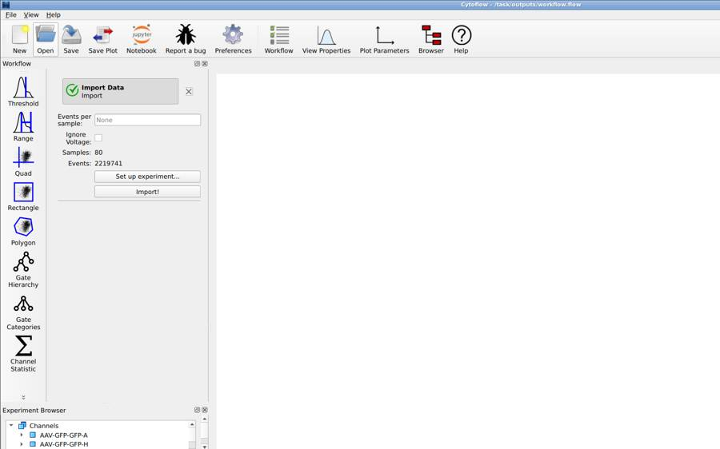
cd /task/outputs; grep -n "metadata" -A60 workflow.flow | sed -n 1,140p; grep -n "voltage\|\$P\|BL1\|BL2\|range" workflow.flow | head -60
271: metadata: 272- AAV-GFP-GFP-A: 273- fcs_name: AAV-GFP-GFP-A 274- range: 1048576.0 275- type: channel 276- voltage: '225' 277- AAV-GFP-GFP-H: 278- fcs_name: AAV-GFP-GFP-H 279- range: 1048576.0 280- type: channel 281- voltage: '225' 282- AAV-GFP-GFP-W: 283- fcs_name: AAV-GFP-GFP-W 284- range: 1024.0 285- type: channel 286- voltage: '225' 287- AAdvanced livedead-A: 288- fcs_name: AAdvanced livedead-A 289- range: 1048576.0 290- type: channel 291- voltage: '350' 292- AAdvanced livedead-H: 293- fcs_name: AAdvanced livedead-H 294- range: 1048576.0 295- type: channel 296- voltage: '350' 297- AAdvanced livedead-W: 298- fcs_name: AAdvanced livedead-W 299- range: 1024.0 300- type: channel 301- voltage: '350' 302- FSC-A: 303- fcs_name: FSC-A 304- range: 1048576.0 305- type: channel 306- voltage: '20' 307- FSC-H: 308- fcs_name: FSC-H 309- range: 1048576.0 310- type: channel 311- voltage: '20' 312- FSC-W: 313- fcs_name: FSC-W 314- range: 1024.0 315- type: channel 316- voltage: '20' 317- SSC-A: 318- fcs_name: SSC-A 319- range: 1048576.0 320- type: channel 321- voltage: '290' 322- SSC-H: 323- fcs_name: SSC-H 324- range: 1048576.0 325- type: channel 326- voltage: '290' 327- SSC-W: 328- fcs_name: SSC-W 329- range: 1024.0 330- type: channel 331- voltage: '290' -- 368: name_metadata: $PnS 369- sample: 370- dtype: category 371- experiment: true 372- type: condition 373- values: 374- - E1 2uM 375- - E1 5uM 376- - E1 10uM 377- - E1 DMSO 378- - E1 no treatment 379- - E3 2uM 380- - E3 5uM 381- - E3 10uM 382- - E3 DMSO 383- - E3 no treatment 384- - WT 2uM 385- - WT 5uM 386- - WT 10uM 387- - WT (L/D stain only) 388- - WT (caspase stain only) 389- - WT DMSO 390- - WT no treatment 391- - WT no treatment (no stain) 392- values_type: categorical 393- well: 394- dtype: category 395- experiment: true 396- type: condition 397- values: 398- - A1 399- - A2 400- - A3 401- - A4 402- - A5 403- - A6 404- - A7 405- - A8 406- - A9 407- - A10 408- - A11 409- - A12 410- - B1 411- - B2 412- - B3 413- - B4 414- - B5 415- - B6 416- - B7 417- - B8 418- - B9 419- - B10 420- - B11 421- - B12 422- - C1 423- - C2 424- - C3 425- - C4 426- - C5 427- - C6 428- - C7 -- 489: name_metadata: null 490- tubes: 491- - !tube;1 492- conditions: 493- camptothecin: 10uM 494- cell_line: WT 495- conditioned_media: WT 24hr conditioned media 496- sample: WT 10uM 497- well: A1 498- file: /task/inputs/raw/Caspase-assay-2-mlk_caspase_Group_A1.fcs 499- - !tube;1 500- conditions: 501- camptothecin: 5uM 502- cell_line: WT 503- conditioned_media: WT 24hr conditioned media 504- sample: WT 5uM 55: index: !pandas-rangeindex;1 274: range: 1048576.0 276: voltage: '225' 279: range: 1048576.0 281: voltage: '225' 284: range: 1024.0 286: voltage: '225' 289: range: 1048576.0 291: voltage: '350' 294: range: 1048576.0 296: voltage: '350' 299: range: 1024.0 301: voltage: '350' 304: range: 1048576.0 306: voltage: '20' 309: range: 1048576.0 311: voltage: '20' 314: range: 1024.0 316: voltage: '20' 319: range: 1048576.0 321: voltage: '290' 324: range: 1048576.0 326: voltage: '290' 329: range: 1024.0 331: voltage: '290' 334: range: 67108864.0 336: voltage: NA
cu click 652 78; sleep 2; cu screenshot /tmp/screen.png
{
"file_path": "/tmp/screen.png"
}/tmp/screen.png
cu click 62 29; sleep 1; cu screenshot /tmp/screen.png; xdotool search --name Cytoflow getwindowgeometry 2>/dev/null | head; which xdotool wmctrl xwininfo
{
"file_path": "/tmp/screen.png"
}Exit code 1 /tmp/screen.png Window 14680068 Position: 0,0 (screen: 0) Geometry: 3x3 /usr/bin/xdotool /usr/bin/xwininfo
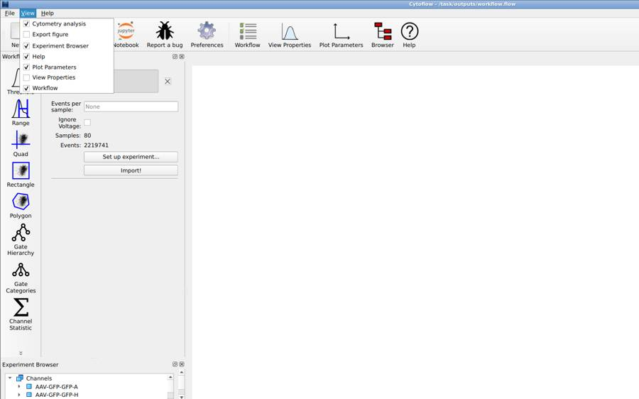
cu click 121 175; sleep 1; xwininfo -root -tree 2>/dev/null | grep -i -E "cytoflow|workflow" | head
0xe0002e "cytoflow": ("cytoflow" "cytoflow") 213x170+44+41 +44+41
0xe00024 "cytoflow": ("cytoflow" "cytoflow") 304x168+7+41 +7+41
0xe00008 "cytoflow": () 1x1+0+0 +0+0
0xe00004 "Qt Selection Owner for cytoflow": () 3x3+0+0 +0+0
0xe00006 "Cytoflow - /task/outputs/workflow.flow": ("cytoflow" "cytoflow") 2082x1171+1+20 +1+20cu click 700 9 double; sleep 2; xwininfo -root -tree 2>/dev/null | grep -i -E "Cytoflow - " | head -3; cu screenshot /tmp/screen.png
{
"file_path": "/tmp/screen.png"
} 0xe00006 "Cytoflow - /task/outputs/workflow.flow": ("cytoflow" "cytoflow") 1440x881+0+19 +0+19
/tmp/screen.png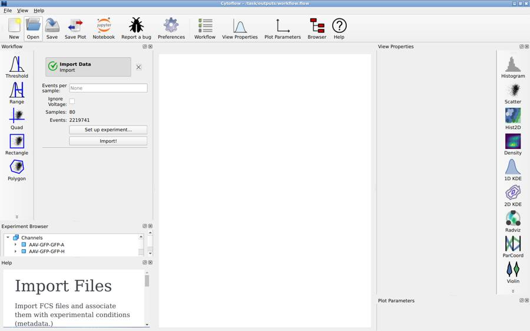
cu click 408 713; sleep 1; cu click 408 614; sleep 1; cu click 1393 276; sleep 3; cu screenshot /tmp/screen.png
{
"file_path": "/tmp/screen.png"
}/tmp/screen.png
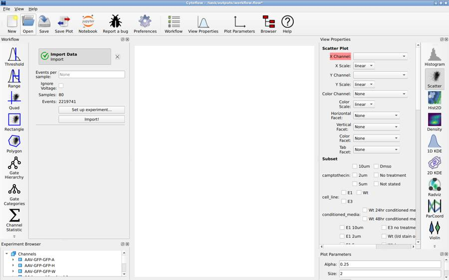
cu click 408 784; sleep 1; cu click 1393 390; sleep 2; cu screenshot /tmp/screen.png
{
"file_path": "/tmp/screen.png"
}/tmp/screen.png
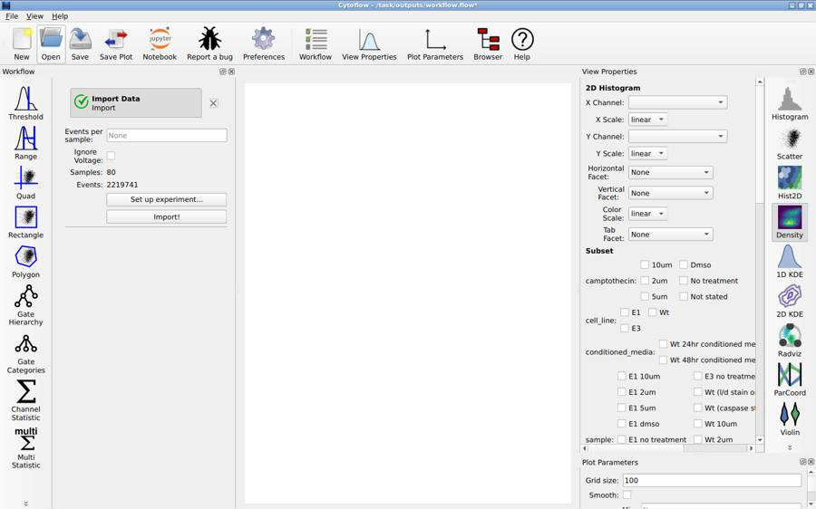
cu click 1195 181; sleep 1; cu screenshot /tmp/screen.png
{
"file_path": "/tmp/screen.png"
}/tmp/screen.png
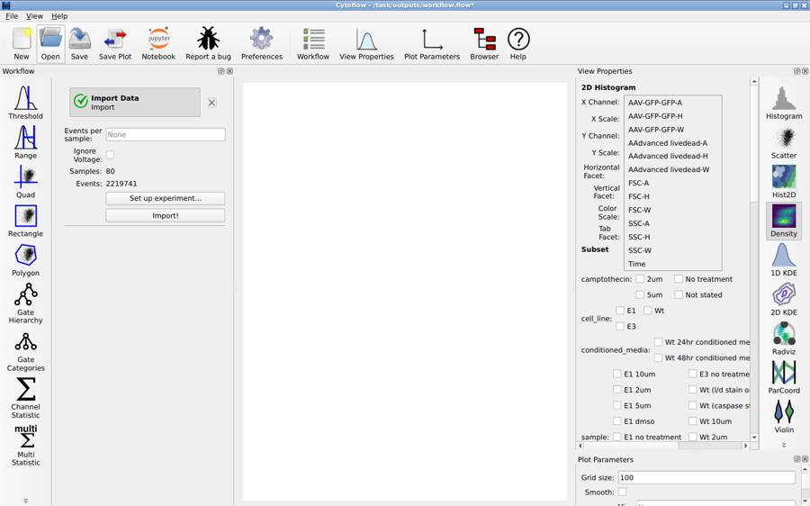
cu click 1135 325; sleep 1; cu click 1195 241; sleep 1; cu screenshot /tmp/screen.png
{
"file_path": "/tmp/screen.png"
}/tmp/screen.png
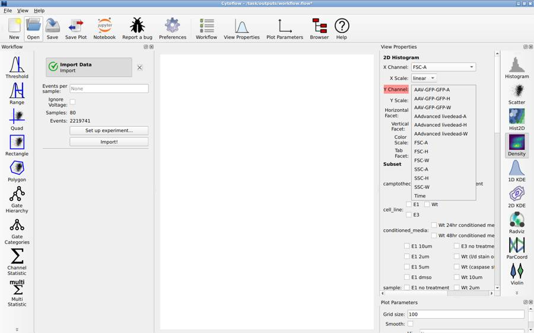
cu click 1135 457; sleep 8; cu screenshot /tmp/screen.png
{
"file_path": "/tmp/screen.png"
}/tmp/screen.png
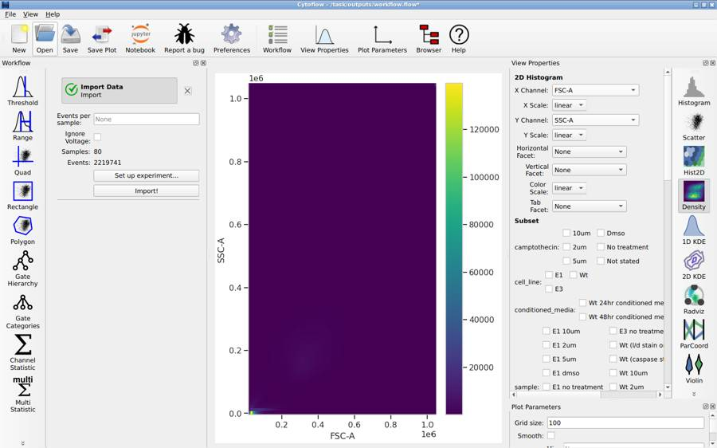
cu click 1143 377; sleep 1; cu screenshot /tmp/screen.png
{
"file_path": "/tmp/screen.png"
}/tmp/screen.png
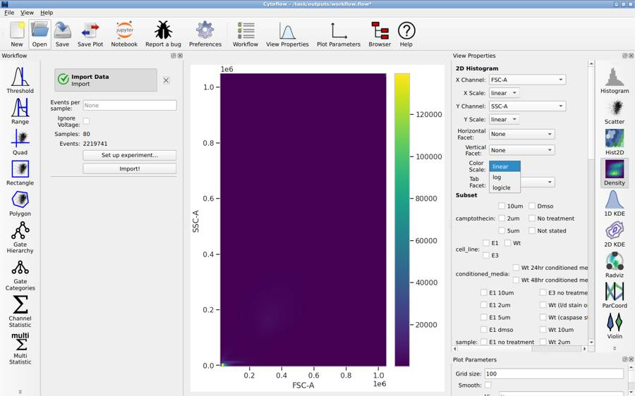
cu click 1127 402; sleep 6; cu screenshot /tmp/screen.png
{
"file_path": "/tmp/screen.png"
}/tmp/screen.png
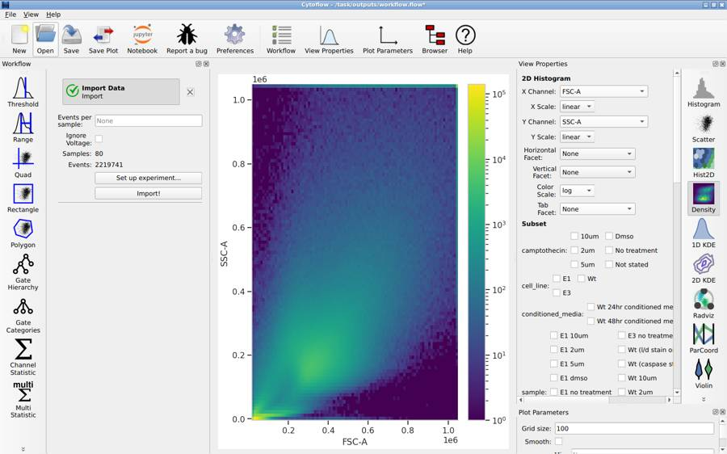
cu click 45 392; sleep 2; cu screenshot /tmp/screen.png
{
"file_path": "/tmp/screen.png"
}/tmp/screen.png
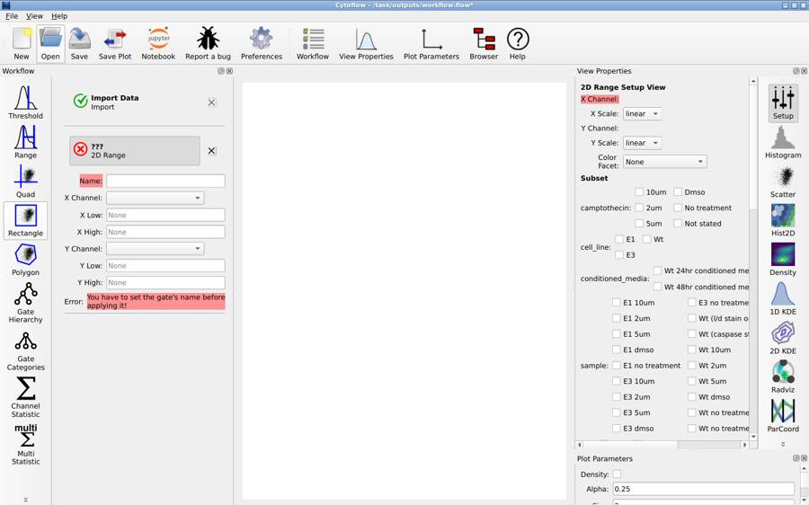
cu click 294 322; cu type "cells"; cu key Tab; sleep 1; cu click 275 353; sleep 1; cu screenshot /tmp/screen.png
{
"file_path": "/tmp/screen.png"
}/tmp/screen.png
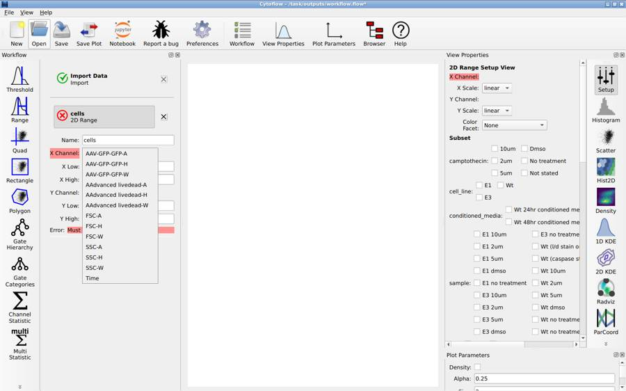
cu click 215 496; sleep 1; cu click 1098 845; sleep 1; cu click 275 443; sleep 1; cu screenshot /tmp/screen.png
{
"file_path": "/tmp/screen.png"
}/tmp/screen.png
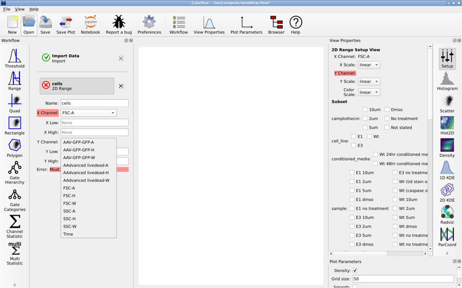
cu click 215 659; sleep 1; cu click 1150 288; sleep 1; cu screenshot /tmp/s1.png;
{
"file_path": "/tmp/s1.png"
}/tmp/s1.png
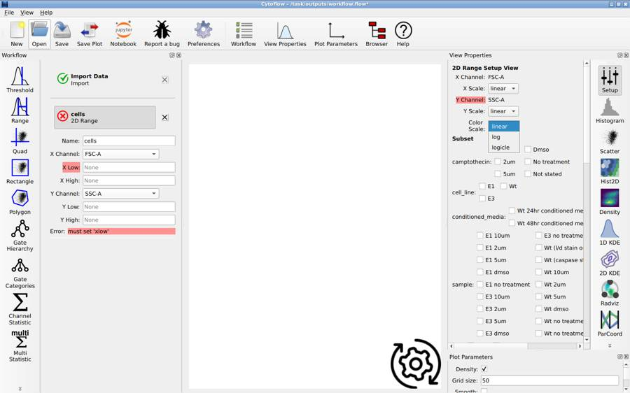
cu click 1133 313; sleep 1; cu click 1255 871 double; cu key ctrl+a; cu type "100"; cu key Tab; sleep 8; cu screenshot /tmp/s1.png;
{
"file_path": "/tmp/s1.png"
}/tmp/s1.png
cu click 1150 202; sleep 1; cu screenshot /tmp/s1.png
{
"file_path": "/tmp/s1.png"
}/tmp/s1.png
cu click 1133 228; sleep 3; cu click 1150 254; sleep 1; cu click 1133 280; sleep 10; cu screenshot /tmp/s1.png
{
"file_path": "/tmp/s1.png"
}/tmp/s1.png

sleep 8; cu screenshot /tmp/s1.png
{
"file_path": "/tmp/s1.png"
}/tmp/s1.png
cu click 1150 202; sleep 1; cu click 1140 252; sleep 2; cu click 1150 254; sleep 1; cu click 1140 304; sleep 12; cu screenshot /tmp/s1.png
{
"file_path": "/tmp/s1.png"
}/tmp/s1.png
cu click 1150 202; sleep 1; cu screenshot /tmp/s1.png
{
"file_path": "/tmp/s1.png"
}/tmp/s1.png
cu click 1143 228; sleep 3; cu click 1150 254; sleep 1; cu click 1143 280; sleep 15; cu screenshot /tmp/s1.png
{
"file_path": "/tmp/s1.png"
}/tmp/s1.png
cu click 294 383; cu type "100000"; cu key Tab; cu click 294 413; cu type "1000000"; cu key Tab; cu click 294 473; cu type "30000"; cu key Tab; cu click 294 503; cu type "1000000"; cu key Tab; sleep 15; cu screenshot /tmp/s1.png
{
"file_path": "/tmp/s1.png"
}/tmp/s1.png
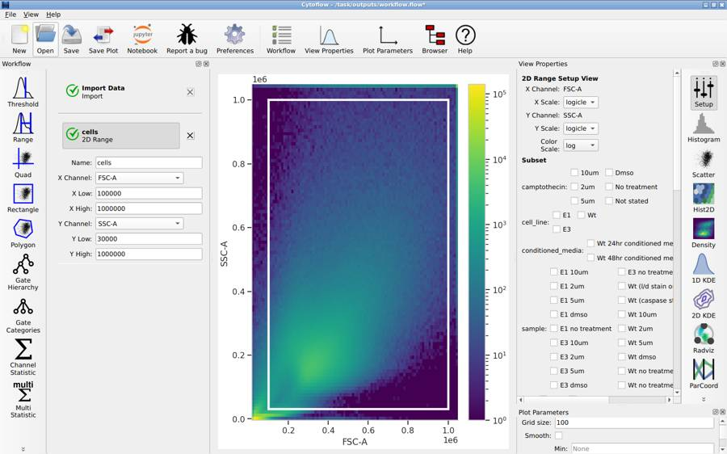
cu click 45 462; sleep 2; cu screenshot /tmp/s1.png
{
"file_path": "/tmp/s1.png"
}/tmp/s1.png
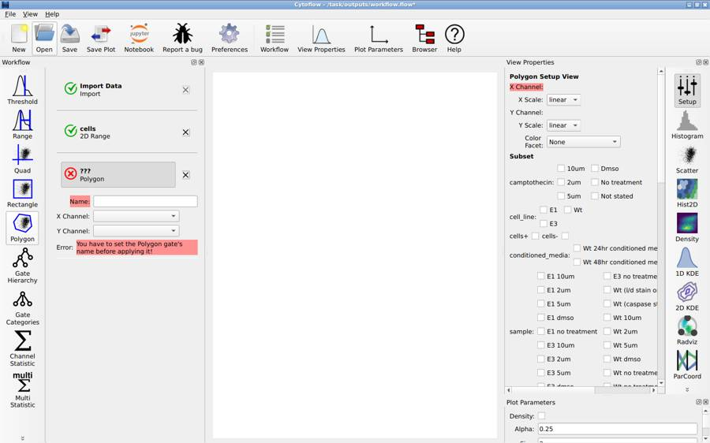
cu click 294 409; cu type "singlets"; cu key Tab; sleep 1; cu click 1098 845; sleep 1; cu click 1085 479; sleep 1; cu click 275 439; sleep 1; cu click 215 582; sleep 1; cu click 275 469; sleep 1; cu screenshot /tmp/s1.png
{
"file_path": "/tmp/s1.png"
}/tmp/s1.png
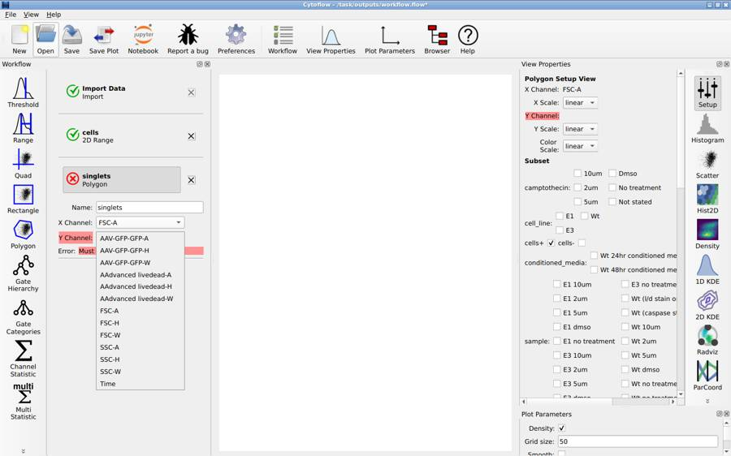
cu click 215 637; sleep 1; cu click 1143 288; sleep 1; cu click 1127 313; sleep 1; cu click 1255 871 double; cu key ctrl+a; cu type "100"; cu key Tab; sleep 15; cu screenshot /tmp/s1.png
{
"file_path": "/tmp/s1.png"
}/tmp/s1.png
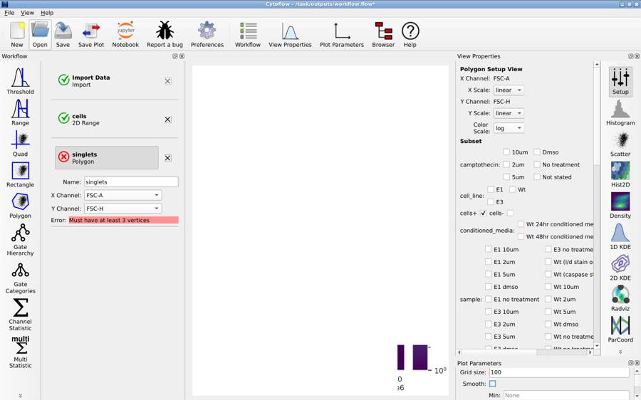
sleep 10; cu screenshot /tmp/s1.png
{
"file_path": "/tmp/s1.png"
}/tmp/s1.png

cu click 240 268; sleep 8; cu click 240 355; sleep 12; cu screenshot /tmp/s1.png
{
"file_path": "/tmp/s1.png"
}/tmp/s1.png
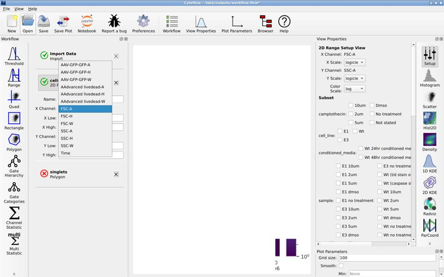
cu key Escape; sleep 10; cu screenshot /tmp/s1.png
{
"file_path": "/tmp/s1.png"
}/tmp/s1.png
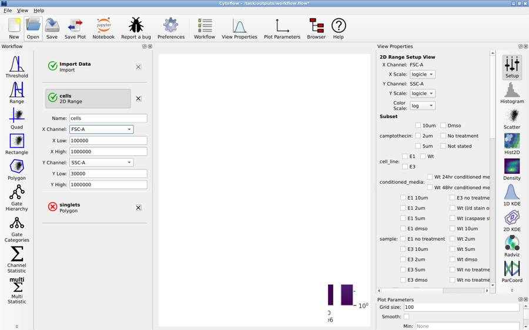
cu click 1150 202; sleep 1; cu click 1143 154; sleep 3; cu click 1150 254; sleep 1; cu click 1143 206; sleep 15; cu screenshot /tmp/s1.png
{
"file_path": "/tmp/s1.png"
}/tmp/s1.png

ps aux --sort=-%cpu | head -8 | cut -c1-200; sleep 10; cu screenshot /tmp/s1.png
{
"file_path": "/tmp/s1.png"
}USER PID %CPU %MEM VSZ RSS TTY STAT START TIME COMMAND cfapp 871 10.7 13.3 2548812 1086252 ? Sl 18:47 0:58 /opt/cytoflow/cytoflow-1.3.2/cytoflow --multiprocessing-fork tracker_fd=10 pipe_handle=14 root 1035 1.3 3.4 5688460 277560 ? Sl 18:47 0:07 claude --verbose --output-format=stream-json --effort high --model claude-fable-5-2 --permission-mode=bypassPermissions --print cfapp 845 1.3 7.0 3626220 573308 ? Sl 18:47 0:07 /opt/cytoflow/cytoflow-1.3.2/cytoflow root 819 0.0 1.0 235396 89260 ? S 18:47 0:00 Xvfb :1 -screen 0 1440x900x24 -nolisten tcp root 829 0.0 0.1 42244 16032 ? S 18:47 0:00 x11vnc -display :1 -forever -shared -nopw -quiet -rfbport 5900 root 47 0.0 0.0 0 0 ? SN 18:47 0:00 [khugepaged] agent 836 0.0 0.2 143076 23180 ? Sl 18:47 0:00 openbox /tmp/s1.png
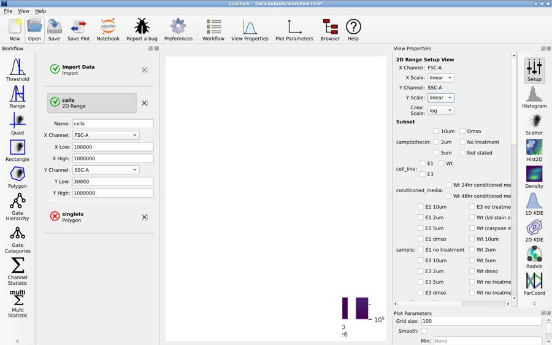
cu click 240 566; sleep 12; cu screenshot /tmp/s1.png
{
"file_path": "/tmp/s1.png"
}/tmp/s1.png
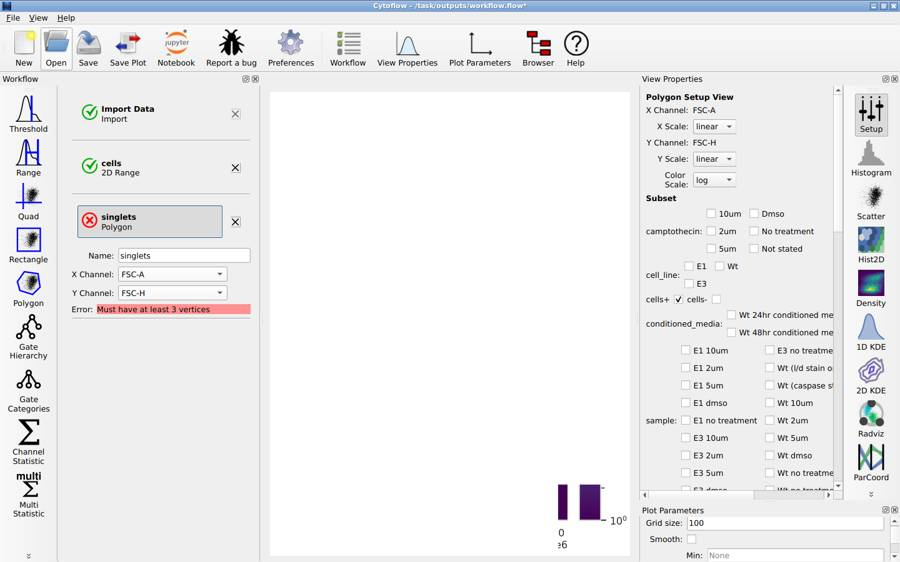
cu click 768 78; sleep 4; cu screenshot /tmp/s1.png
{
"file_path": "/tmp/s1.png"
}/tmp/s1.png
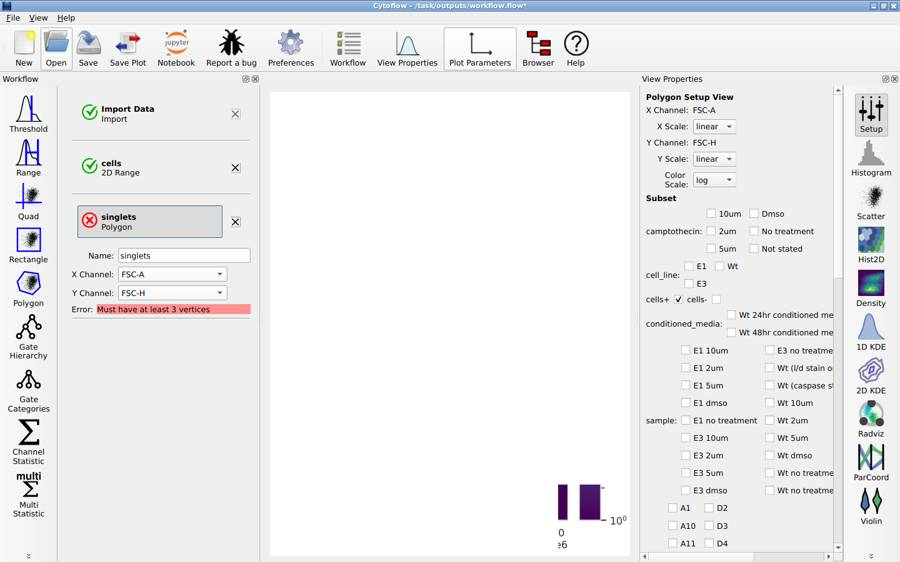
cu click 768 78; sleep 2; cu drag 1020 510 1035 510; sleep 6; cu screenshot /tmp/s1.png
{
"file_path": "/tmp/s1.png"
}/tmp/s1.png

cu click 566 820; sleep 1; cu click 566 776; sleep 1; cu click 902 181; sleep 1; cu click 902 421 double; sleep 12; cu screenshot /tmp/s1.png
{
"file_path": "/tmp/s1.png"
}/tmp/s1.png
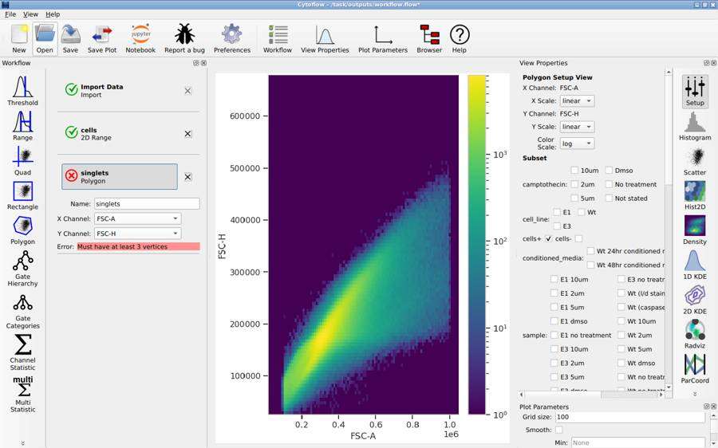
cu drag 1035 510 1022 510; sleep 8; cu screenshot /tmp/s1.png
{
"file_path": "/tmp/s1.png"
}/tmp/s1.png
cu click 566 818; sleep 10; cu drag 1022 510 1024 510; sleep 8; cu screenshot /tmp/s1.png
{
"file_path": "/tmp/s1.png"
}/tmp/s1.png
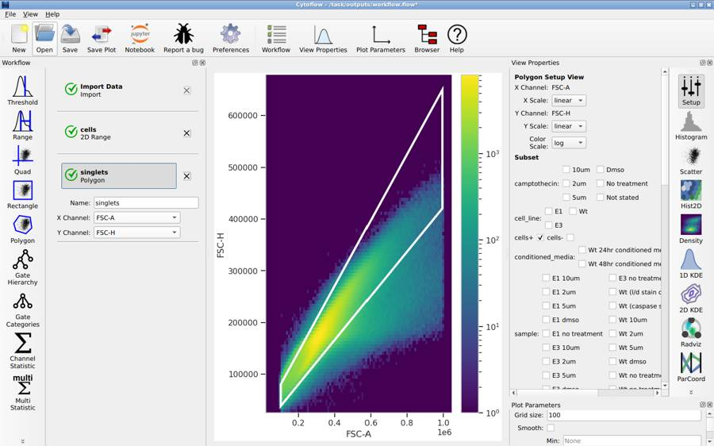
cu key ctrl+s; sleep 2; cu click 1393 460; sleep 2; cu screenshot /tmp/s1.png
{
"file_path": "/tmp/s1.png"
}/tmp/s1.png
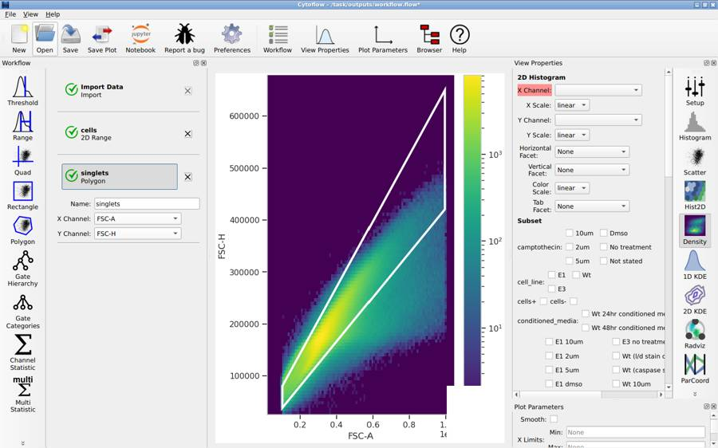
cu click 1199 181; sleep 1; cu click 1160 182; sleep 1; cu click 1199 241; sleep 1; cu click 1180 313; sleep 1; cu click 1147 211; sleep 1; cu click 1140 259; sleep 1; cu click 1147 271; sleep 1; cu click 1140 319; sleep 1; cu click 1147 377; sleep 1; cu click 1135 401; sleep 1; cu click 1187 304; sleep 1; cu screenshot /tmp/s1.png
{
"file_path": "/tmp/s1.png"
}/tmp/s1.png
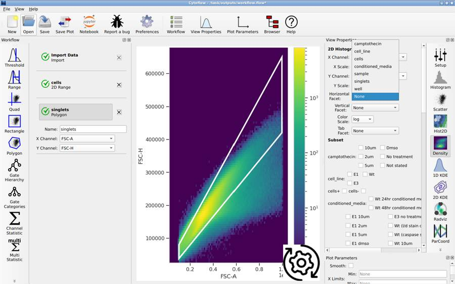
cu click 1164 139; sleep 2; cu click 1187 341; sleep 1; cu click 1146 198; sleep 2; cu click 1090 605; sleep 1; cu scroll 1180 650 down 5; sleep 2; cu screenshot /tmp/s1.png
{
"file_path": "/tmp/s1.png"
}/tmp/s1.png
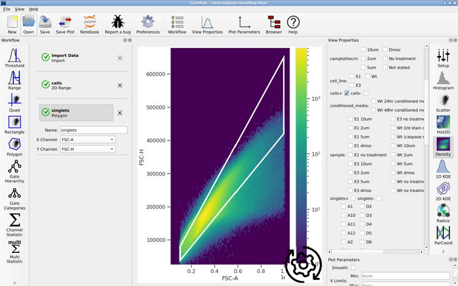
cu click 1110 624; sleep 20; cu drag 1024 510 1022 510; sleep 10; cu screenshot /tmp/s1.png
{
"file_path": "/tmp/s1.png"
}/tmp/s1.png
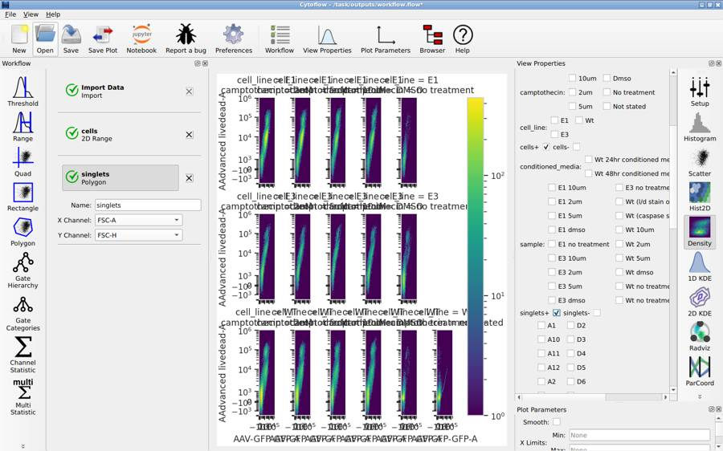
cu click 557 78; sleep 15; cu screenshot /tmp/s1.png
{
"file_path": "/tmp/s1.png"
}/tmp/s1.png
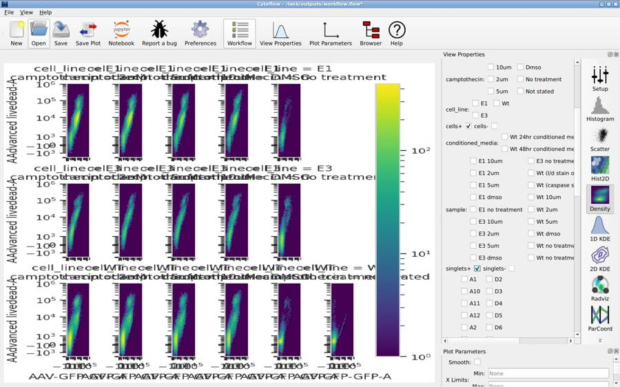
cu click 1207 184; cu click 1207 212; cu click 1152 240; sleep 1; cu scroll 1180 400 up 10; sleep 1; cu screenshot /tmp/s1.png
{
"file_path": "/tmp/s1.png"
}/tmp/s1.png
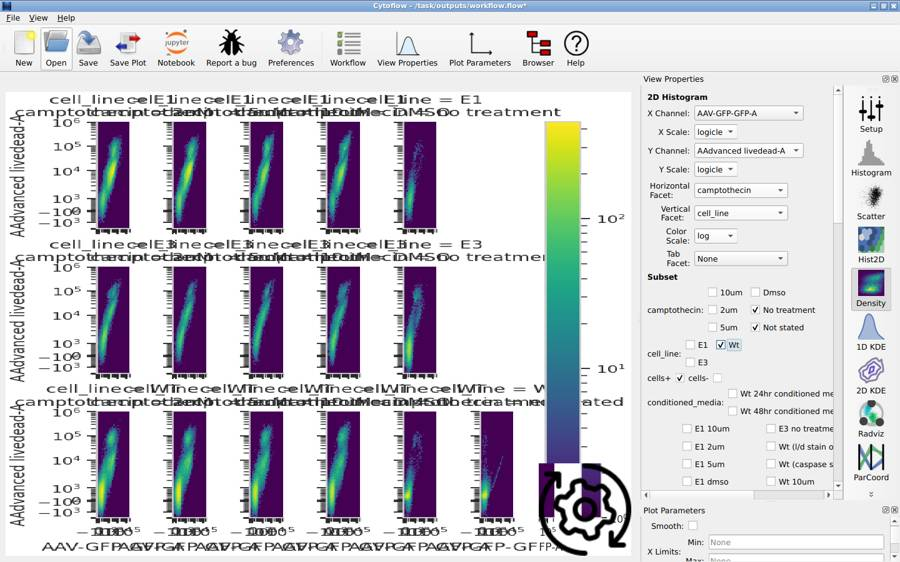
cu click 1185 304; sleep 1; cu click 1150 400; sleep 2; cu click 1185 341; sleep 1; cu screenshot /tmp/s2.png; cu click 1150 485; sleep 15; cu drag 1022 510 1024 510; sleep 10; cu screenshot /tmp/s1.png
{
"file_path": "/tmp/s1.png"
}/tmp/s2.png /tmp/s1.png
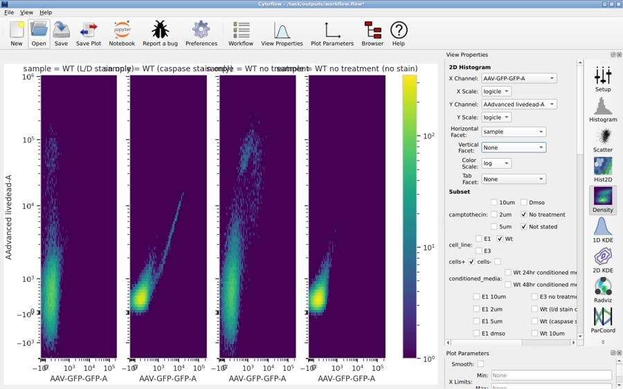
cu drag 1024 510 850 510; sleep 12; cu screenshot /tmp/s1.png
{
"file_path": "/tmp/s1.png"
}/tmp/s1.png
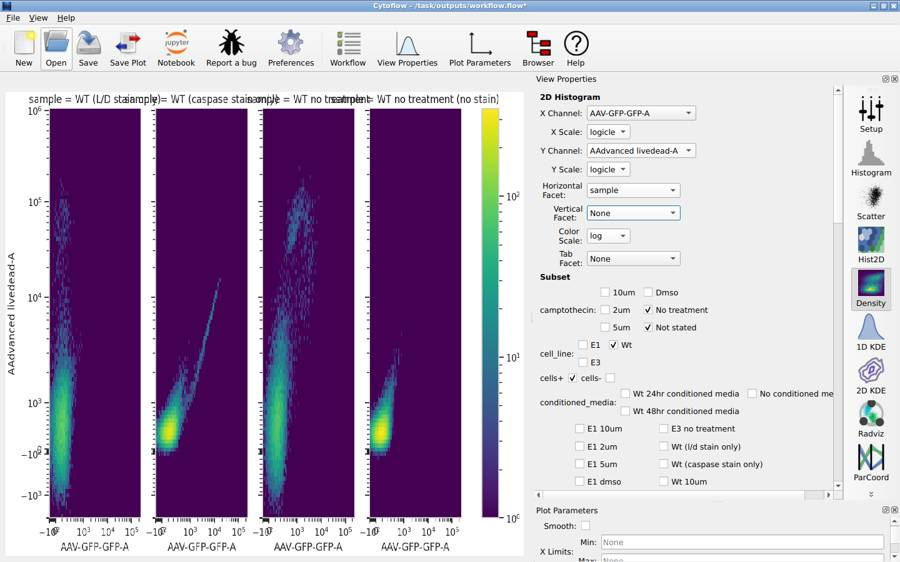
thinking
The controls look sensible: caspase-only shows spillover into the "livedead" detector, and L/D-only gives a separate high population. I'm now viewing the WT camptothecin dose series without conditioned media.
cu click 1012 304; sleep 1; cu click 990 208; sleep 2; cu click 1037 496; cu click 1037 524; cu click 1204 630; sleep 20; cu drag 850 510 852 510; sleep 10; cu screenshot /tmp/s1.png
{
"file_path": "/tmp/s1.png"
}/tmp/s1.png
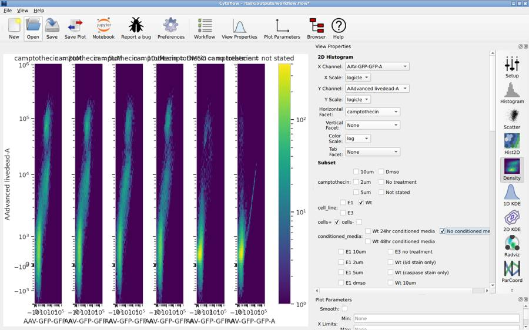
cu click 969 468; cu click 1038 468; sleep 20; cu drag 852 510 850 510; sleep 10; cu screenshot /tmp/s1.png
{
"file_path": "/tmp/s1.png"
}/tmp/s1.png
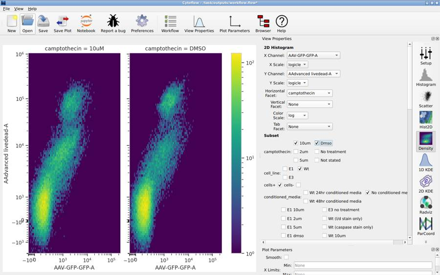
thinking
Caspase-bright cells spill into the dead-stain channel, so the live gate has to be a 2-D diagonal one. I'm checking the control histograms next to set the positivity threshold.
cu click 1393 252; sleep 3; cu screenshot /tmp/s1.png
{
"file_path": "/tmp/s1.png"
}/tmp/s1.png
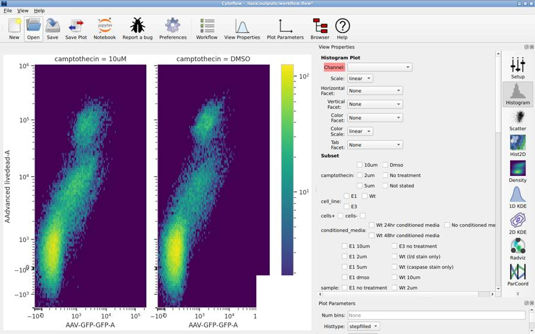
cu click 1020 181; sleep 1; cu click 990 182; sleep 1; cu click 968 211; sleep 1; cu click 960 259; sleep 1; cu click 1008 317; sleep 1; cu click 960 245; sleep 1; cu click 1037 472; cu click 1037 500; cu click 982 528; cu click 916 581; sleep 1; cu scroll 1100 600 down 5; sleep 2; cu screenshot /tmp/s1.png
{
"file_path": "/tmp/s1.png"
}/tmp/s1.png
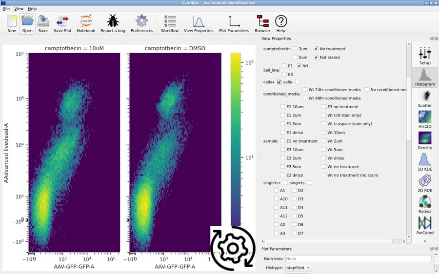
cu click 937 600; sleep 1; cu click 976 879; sleep 1; cu screenshot /tmp/s2.png
{
"file_path": "/tmp/s2.png"
}/tmp/s2.png
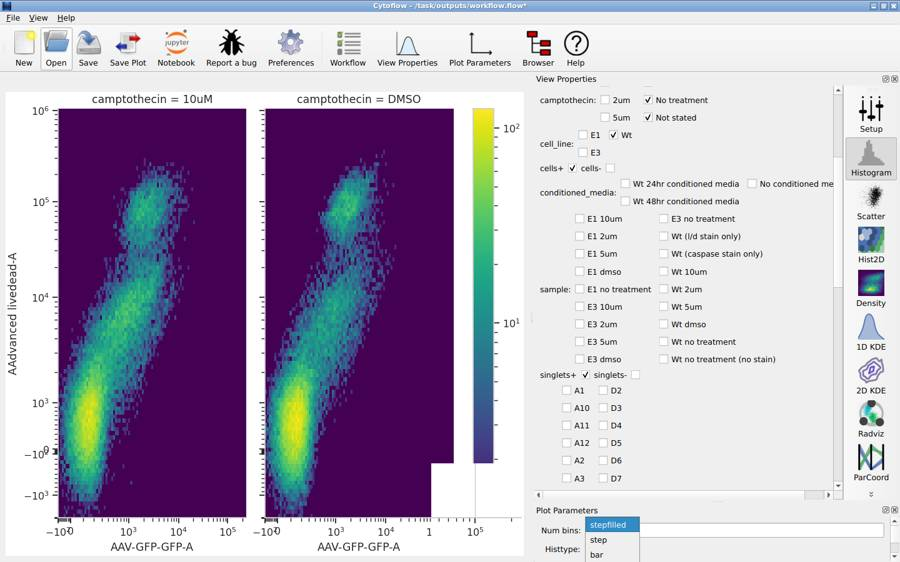
cu click 958 864; sleep 2; cu scroll 1100 870 down 3; sleep 1; cu drag 850 510 852 510; sleep 10; cu screenshot /tmp/s1.png
{
"file_path": "/tmp/s1.png"
}/tmp/s1.png
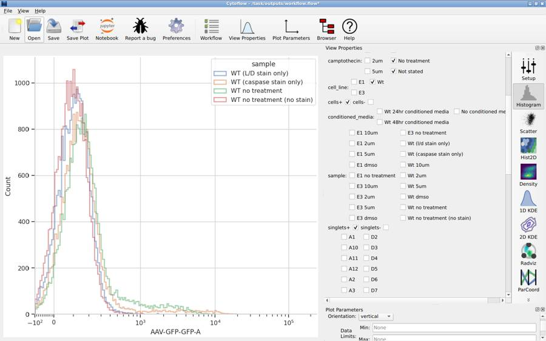
cu click 557 78; sleep 3; cu drag 852 510 1060 510; sleep 3; cu screenshot /tmp/s1.png
{
"file_path": "/tmp/s1.png"
}/tmp/s1.png
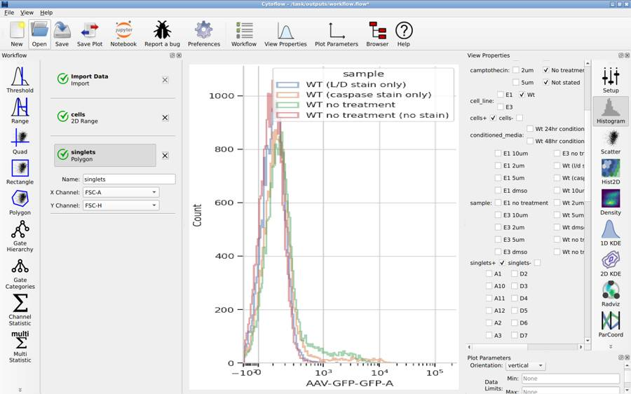
cu click 45 462; sleep 3; cu screenshot /tmp/s1.png
{
"file_path": "/tmp/s1.png"
}/tmp/s1.png
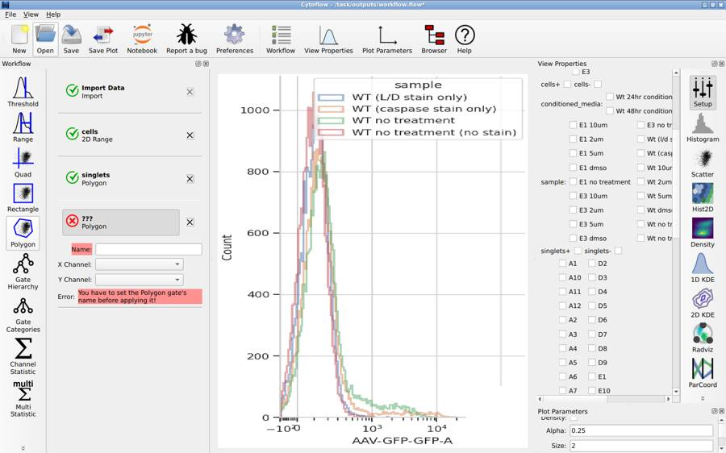
cu click 294 495; cu type "live"; cu key Tab; sleep 1; cu scroll 1200 400 up 15; cu scroll 1200 860 up 10; sleep 1; cu screenshot /tmp/s1.png
{
"file_path": "/tmp/s1.png"
}/tmp/s1.png
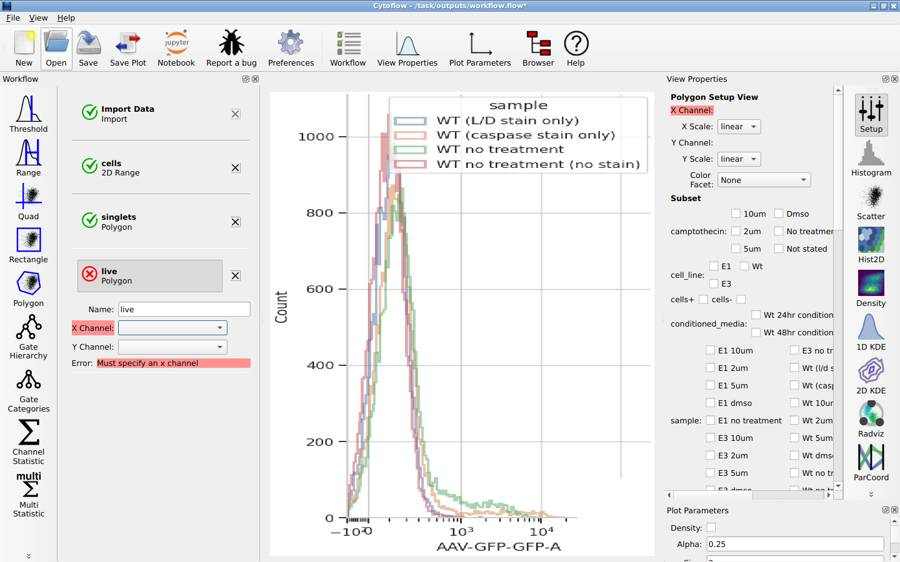
cu click 1137 845; sleep 1; cu click 1125 479; sleep 1; cu click 1182 202; sleep 1; cu click 1175 250; sleep 1; cu click 1182 254; sleep 1; cu click 1175 302; sleep 1; cu click 275 525; sleep 1; cu click 245 526; sleep 1; cu click 275 555; sleep 1; cu click 265 627; sleep 2; cu screenshot /tmp/s1.png
{
"file_path": "/tmp/s1.png"
}/tmp/s1.png
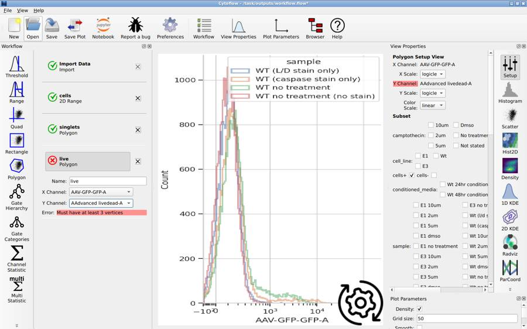
cu click 1182 288; sleep 1; cu click 1170 312; sleep 1; cu click 1270 871 double; cu key ctrl+a; cu type "100"; cu key Tab; sleep 1; cu scroll 1200 600 down 5; sleep 2; cu screenshot /tmp/s1.png
{
"file_path": "/tmp/s1.png"
}/tmp/s1.png
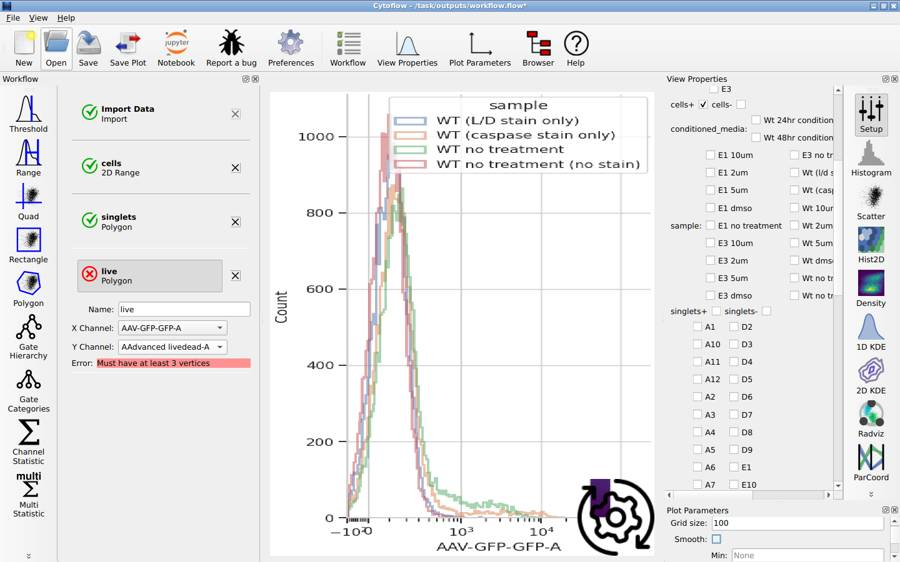
cu click 1146 498; sleep 20; cu drag 1060 510 1058 510; sleep 12; cu screenshot /tmp/s1.png
{
"file_path": "/tmp/s1.png"
}/tmp/s1.png
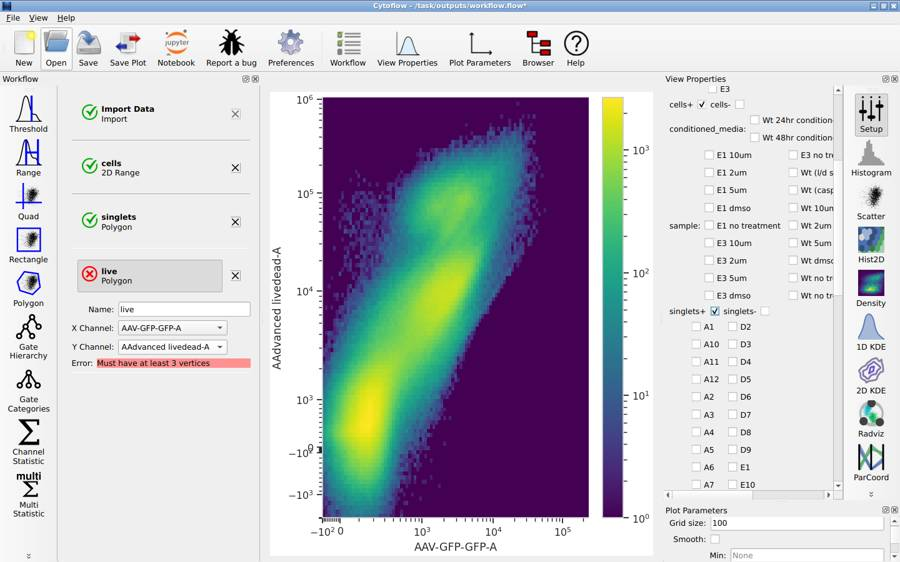
thinking
The pooled view shows three populations, and a range gate on the dead-stain detector at the valley cleanly separates the dead cells. I'm swapping the polygon for a range gate named `live`.
cu click 377 441; sleep 3; cu screenshot /tmp/s1.png
{
"file_path": "/tmp/s1.png"
}/tmp/s1.png
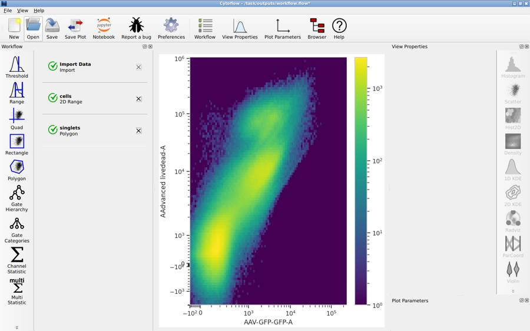
cu click 240 355; sleep 3; cu click 45 250; sleep 3; cu screenshot /tmp/s1.png
{
"file_path": "/tmp/s1.png"
}/tmp/s1.png
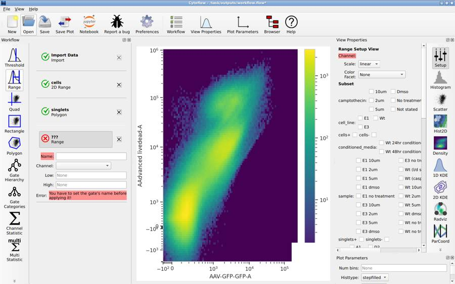
cu click 288 495; cu type "live"; cu key Tab; sleep 1; cu click 1168 202; sleep 1; cu click 1160 250; sleep 1; cu click 1123 427; sleep 1; cu click 1144 758; sleep 1; cu click 263 525; sleep 1; cu click 250 597; sleep 15; cu drag 1058 510 1060 510; sleep 8; cu screenshot /tmp/s1.png
{
"file_path": "/tmp/s1.png"
}/tmp/s1.png
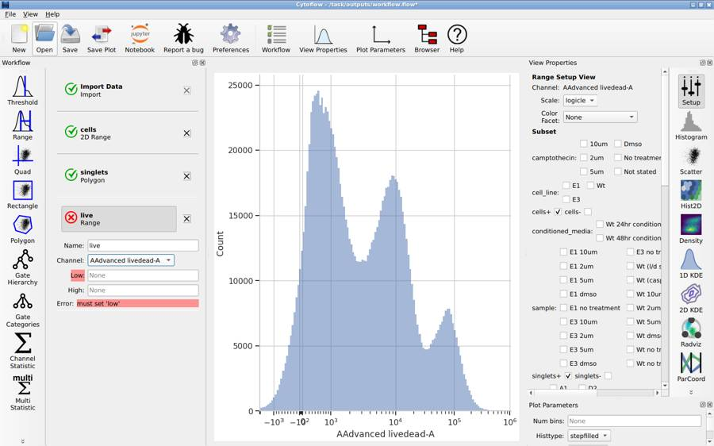
date; cu click 288 555; cu type "-1000000"; cu key Tab; cu click 288 585; cu type "33000"; cu key Tab; sleep 15; cu drag 1060 510 1058 510; sleep 8; cu screenshot /tmp/s1.png
{
"file_path": "/tmp/s1.png"
}Tue Nov 10 19:09:34 UTC 2026 /tmp/s1.png
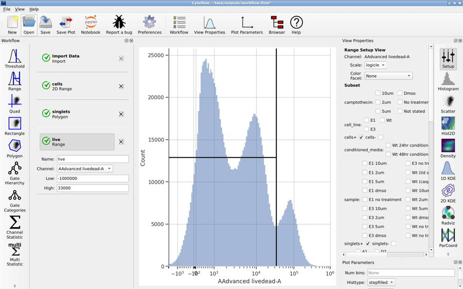
cu click 45 180; sleep 3; cu screenshot /tmp/s1.png
{
"file_path": "/tmp/s1.png"
}/tmp/s1.png
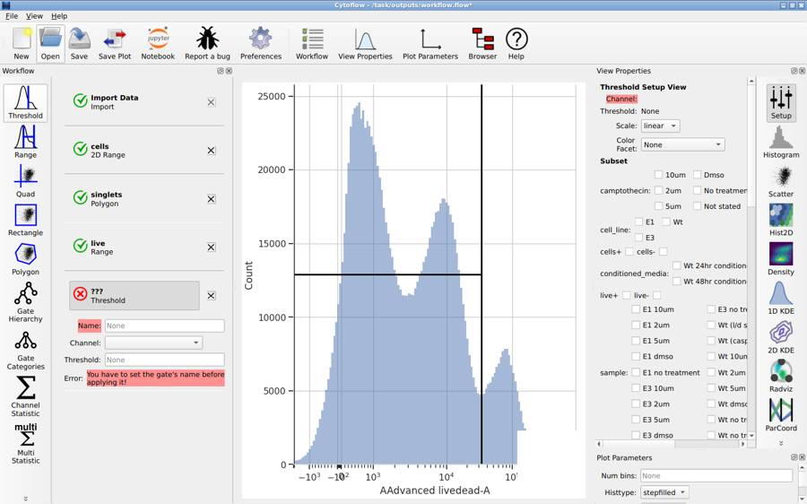
cu click 294 581; cu type "caspase_pos"; cu key Tab; sleep 1; cu click 1178 224; sleep 1; cu click 1170 272; sleep 1; cu click 1123 449; sleep 1; cu click 1118 527; sleep 1; cu scroll 1200 600 down 5; sleep 2; cu screenshot /tmp/s1.png
{
"file_path": "/tmp/s1.png"
}/tmp/s1.png
cu click 1144 490; sleep 1; cu click 273 612; sleep 1; cu click 240 613; sleep 1; cu click 294 642; cu type "1000"; cu key Tab; sleep 15; cu drag 1058 510 1060 510; sleep 8; cu screenshot /tmp/s1.png
{
"file_path": "/tmp/s1.png"
}/tmp/s1.png
cu click 273 612; sleep 1; cu screenshot /tmp/s2.png
{
"file_path": "/tmp/s2.png"
}/tmp/s2.png
cu click 243 589; sleep 15; cu drag 1060 510 1058 510; sleep 8; cu screenshot /tmp/s1.png
{
"file_path": "/tmp/s1.png"
}/tmp/s1.png
thinking
All four gates are in place, and the caspase threshold of 1,000 sits in the valley of a clearly bimodal distribution. I'm now adding a count statistic to the export for per-well counts.
cu key ctrl+s; sleep 3; cu click 45 700; sleep 3; cu screenshot /tmp/s1.png; grep -n "vertices" -A12 /task/outputs/workflow.flow | head -40
{
"file_path": "/tmp/s1.png"
}/tmp/s1.png 3914: vertices: 3915- - !!python/tuple 3916- - 101415.90757657003 3917- - 38594.21856134079 3918- - !!python/tuple 3919- - 101415.90757657003 3920- - 80476.28573523756 3921- - !!python/tuple 3922- - 996336.4907410087 3923- - 649872.9608851199 3924- - !!python/tuple 3925- - 996336.4907410087 3926- - 420518.7835042566
cu click 288 668; cu type "count"; cu key Tab; sleep 1; cu click 263 698; sleep 1; cu screenshot /tmp/s2.png
{
"file_path": "/tmp/s2.png"
}/tmp/s2.png
cu click 205 743; sleep 1; cu click 253 728; sleep 1; cu screenshot /tmp/s2.png
{
"file_path": "/tmp/s2.png"
}/tmp/s2.png
cu click 205 577; sleep 1; cu scroll 250 700 down 10; sleep 2; cu screenshot /tmp/s2.png
{
"file_path": "/tmp/s2.png"
}/tmp/s2.png
cu scroll 105 450 down 15; sleep 2; cu screenshot /tmp/s2.png
{
"file_path": "/tmp/s2.png"
}/tmp/s2.png
cu scroll 105 450 up 8; sleep 2; cu screenshot /tmp/s2.png
{
"file_path": "/tmp/s2.png"
}/tmp/s2.png
cu drag 421 510 660 510; sleep 3; cu screenshot /tmp/s2.png
{
"file_path": "/tmp/s2.png"
}/tmp/s2.png
cu click 412 404; sleep 1; cu click 185 404; sleep 1; cu click 412 376; sleep 1; cu click 412 320; sleep 1; cu click 185 348; sleep 10; cu screenshot /tmp/s2.png
{
"file_path": "/tmp/s2.png"
}/tmp/s2.png
cu click 1393 790; sleep 2; cu screenshot /tmp/s2.png
{
"file_path": "/tmp/s2.png"
}/tmp/s2.png
cu click 1399 605; sleep 3; cu screenshot /tmp/s2.png
{
"file_path": "/tmp/s2.png"
}/tmp/s2.png
cu click 1180 181; sleep 1; cu screenshot /tmp/s2.png
{
"file_path": "/tmp/s2.png"
}/tmp/s2.png
cu click 1160 207; sleep 5; cu drag 1058 510 1060 510; sleep 5; cu screenshot /tmp/s2.png
{
"file_path": "/tmp/s2.png"
}/tmp/s2.png
mkdir -p /tmp/cf && chmod 777 /tmp/cf; cu click 1182 211; sleep 3; cu screenshot /tmp/s2.png
{
"file_path": "/tmp/s2.png"
}/tmp/s2.png
cu paste "/tmp/cf/counts_v1.csv"; sleep 1; cu key Return; sleep 4; ls -la /tmp/cf; head -20 /tmp/cf/counts_v1.csv; wc -l /tmp/cf/counts_v1.csv
total 28 drwxrwxrwx 2 root root 4096 Nov 10 19:14 . drwxrwxrwx 9 root root 4096 Nov 10 19:13 .. -rw-rw-r-- 1 cfapp cfapp 20201 Nov 10 19:14 counts_v1.csv well,cells,singlets,live,caspase_pos,Time A1,0,0,0,0,53.0 A1,0,0,0,1,613.0 A1,0,0,1,0,9995.0 A1,0,0,1,1,157.0 A1,0,1,0,0,2.0 A1,0,1,0,1,42.0 A1,0,1,1,0,233.0 A1,0,1,1,1,5.0 A1,1,0,0,0,44.0 A1,1,0,0,1,451.0 A1,1,0,1,0,1502.0 A1,1,0,1,1,532.0 A1,1,1,0,0,369.0 A1,1,1,0,1,1453.0 A1,1,1,1,0,13811.0 A1,1,1,1,1,2066.0 A10,0,0,0,0,28.0 A10,0,0,0,1,362.0 A10,0,0,1,0,12624.0 1177 /tmp/cf/counts_v1.csv
mkdir -p /task/work && cat > /task/work/tab.py <<'EOF'
import pandas as pd, sys, re
src = sys.argv[1]
d = pd.read_csv(src)
valcol = [c for c in d.columns if c not in ('well','cells','singlets','live','caspase_pos')][0]
d = d.rename(columns={valcol:'n'}); d['n']=d['n'].fillna(0).astype(int)
lay = pd.read_csv('/task/inputs/plate_layout.csv')
rows=[]
for w,g in d.groupby('well'):
tot=g.n.sum()
c=g[g.cells==1]; s=c[c.singlets==1]; l=s[s.live==1]; p=l[l.caspase_pos==1]
pall = s[s.caspase_pos==1]
rows.append(dict(well=w,all=tot,cells=c.n.sum(),singlets=s.n.sum(),live=l.n.sum(),casp=p.n.sum(),casp_all=pall.n.sum()))
t=pd.DataFrame(rows).merge(lay,on='well')
t['pct_cells']=100*t.cells/t['all']; t['pct_sing']=100*t.singlets/t.cells; t['pct_live']=100*t.live/t.singlets
t['pct_casp']=100*t.casp/t.live; t['pct_casp_all']=100*t.casp_all/t.singlets
t['row']=t.well.str[0]; t['col']=t.well.str[1:].astype(int)
t=t.sort_values(['row','col'])
pd.set_option('display.width',250); pd.set_option('display.max_rows',200)
print(t[['well','sample','conditioned_media','all','cells','singlets','live','casp','pct_cells','pct_sing','pct_live','pct_casp','pct_casp_all']].round(1).to_string(index=False))
t.to_csv('/task/work/perwell.csv',index=False)
EOF
python3 /task/work/tab.py /tmp/cf/counts_v1.csvwell sample conditioned_media all cells singlets live casp pct_cells pct_sing pct_live pct_casp pct_casp_all A1 WT 10uM WT 24hr conditioned media 31328 20228 17699 15877 2066 64.6 87.5 89.7 13.0 19.9 A2 WT 5uM WT 24hr conditioned media 40169 28444 24879 22973 3952 70.8 87.5 92.3 17.2 21.8 A3 WT 2uM WT 24hr conditioned media 47337 31599 27650 25260 4358 66.8 87.5 91.4 17.3 21.9 A4 WT DMSO WT 24hr conditioned media 33079 23357 20403 18144 3738 70.6 87.4 88.9 20.6 28.3 A5 WT 10uM WT 48hr conditioned media 34963 24651 21659 19665 3463 70.5 87.9 90.8 17.6 23.7 A6 WT 5uM WT 48hr conditioned media 33431 24864 20770 19359 3182 74.4 83.5 93.2 16.4 21.3 A7 WT 2uM WT 48hr conditioned media 36445 27419 23126 21424 3334 75.2 84.3 92.6 15.6 20.8 A8 WT DMSO WT 48hr conditioned media 22867 16849 14014 12611 2070 73.7 83.2 90.0 16.4 23.8 A9 WT 10uM no conditioned media 40034 24409 21035 18979 2539 61.0 86.2 90.2 13.4 20.9 A10 WT 5uM no conditioned media 42298 28685 25355 22521 3028 67.8 88.4 88.8 13.4 21.5 A11 WT 2uM no conditioned media 43376 28585 25247 22193 3230 65.9 88.3 87.9 14.6 23.4 A12 WT DMSO no conditioned media 30724 19168 16315 14244 1902 62.4 85.1 87.3 13.4 23.4 B1 E1 10uM WT 24hr conditioned media 18757 13977 12116 8755 4448 74.5 86.7 72.3 50.8 64.1 B2 E1 5uM WT 24hr conditioned media 32477 22928 20142 17411 10316 70.6 87.8 86.4 59.2 64.5 B3 E1 2uM WT 24hr conditioned media 40067 26987 23518 19942 13167 67.4 87.1 84.8 66.0 71.0 B4 E1 DMSO WT 24hr conditioned media 19965 13417 11190 8693 4511 67.2 83.4 77.7 51.9 62.4 B5 E1 10uM WT 48hr conditioned media 17852 13897 12330 9637 5297 77.8 88.7 78.2 55.0 64.6 B6 E1 5uM WT 48hr conditioned media 31705 22611 19756 16872 10127 71.3 87.4 85.4 60.0 65.8 B7 E1 2uM WT 48hr conditioned media 35417 24247 21258 17593 11343 68.5 87.7 82.8 64.5 70.5 B8 E1 DMSO WT 48hr conditioned media 26222 16946 14055 12118 7575 64.6 82.9 86.2 62.5 67.6 B9 E1 10uM no conditioned media 34411 21990 18924 17853 7035 63.9 86.1 94.3 39.4 42.8 B10 E1 5uM no conditioned media 40098 25652 22050 21330 8482 64.0 86.0 96.7 39.8 41.7 B11 E1 2uM no conditioned media 41005 24424 20960 19815 9565 59.6 85.8 94.5 48.3 51.1 B12 E1 DMSO no conditioned media 31680 16156 13168 12326 5064 51.0 81.5 93.6 41.1 44.7 C1 E3 10uM WT 24hr conditioned media 17681 10391 7374 6446 2502 58.8 71.0 87.4 38.8 46.5 C2 E3 5uM WT 24hr conditioned media 25455 12787 9583 8549 3686 50.2 74.9 89.2 43.1 49.2 C3 E3 2uM WT 24hr conditioned media 21098 12375 9542 8673 2970 58.7 77.1 90.9 34.2 40.2 C4 E3 DMSO WT 24hr conditioned media 18113 9676 6836 6000 2372 53.4 70.6 87.8 39.5 46.9 C5 E3 10uM WT 48hr conditioned media 18729 9655 6753 6035 2015 51.6 69.9 89.4 33.4 40.4 C6 E3 5uM WT 48hr conditioned media 21716 11165 8181 7525 2837 51.4 73.3 92.0 37.7 42.6 C7 E3 2uM WT 48hr conditioned media 22874 12041 9342 8863 2877 52.6 77.6 94.9 32.5 35.9 C8 E3 DMSO WT 48hr conditioned media 18604 9917 7038 6352 1942 53.3 71.0 90.3 30.6 37.2 C9 E3 10uM no conditioned media 22962 13743 11083 10534 1076 59.9 80.6 95.0 10.2 14.2 C10 E3 5uM no conditioned media 15794 10154 8529 8246 610 64.3 84.0 96.7 7.4 10.1 C11 E3 2uM no conditioned media 19854 13063 11448 11097 839 65.8 87.6 96.9 7.6 9.6 C12 E3 DMSO no conditioned media 23104 13747 11389 11045 1436 59.5 82.8 97.0 13.0 15.2 D1 WT 10uM WT 24hr conditioned media 29965 19713 17602 16001 4569 65.8 89.3 90.9 28.6 34.9 D2 WT 5uM WT 24hr conditioned media 42557 29048 25685 23824 5374 68.3 88.4 92.8 22.6 28.0 D3 WT 2uM WT 24hr conditioned media 44711 30051 26491 24234 6161 67.2 88.2 91.5 25.4 31.5 D4 WT DMSO WT 24hr conditioned media 26104 17773 15276 … [5,987 more characters not shown]
thinking
Counts are tabulated: controls look right, camptothecin shows no dose-response, KO clone E1 differs from WT but E3 does not, and conditioned media raises caspase positivity. Next I'm running per-well acquisition QC before finalising.
cu click 1393 182; sleep 2; cu click 557 78; sleep 2; cu drag 1060 510 850 510; sleep 3; cu screenshot /tmp/s2.png
{
"file_path": "/tmp/s2.png"
}/tmp/s2.png
cu click 1020 181; sleep 1; cu click 960 468; sleep 2; cu click 1008 244; sleep 1; cu screenshot /tmp/s2.png
{
"file_path": "/tmp/s2.png"
}/tmp/s2.png
cu click 985 31; sleep 2; cu click 1008 281; sleep 1; cu click 968 114; sleep 2; cu click 1008 317; sleep 1; cu click 956 293; sleep 2; cu click 1000 628; sleep 2; cu click 976 879; sleep 1; cu click 958 864; sleep 20; cu drag 850 510 852 510; sleep 10; cu screenshot /tmp/s2.png
{
"file_path": "/tmp/s2.png"
}/tmp/s2.png
cu click 1001 628; sleep 1; cu click 1001 656; sleep 20; cu drag 852 510 850 510; sleep 10; cu screenshot /tmp/s2.png
{
"file_path": "/tmp/s2.png"
}/tmp/s2.png
cu click 1001 656; sleep 1; cu click 1204 628; sleep 20; cu drag 850 510 852 510; sleep 10; cu screenshot /tmp/s2.png
{
"file_path": "/tmp/s2.png"
}/tmp/s2.png
cu click 1204 628; sleep 1; cu click 1038 472; cu click 1038 500; sleep 1; cu click 1008 281; sleep 1; cu screenshot /tmp/s3.png
{
"file_path": "/tmp/s3.png"
}/tmp/s3.png
cu click 960 449; sleep 2; cu click 1008 244; sleep 1; cu click 966 387; sleep 15; cu drag 852 510 850 510; sleep 10; cu screenshot /tmp/s2.png
{
"file_path": "/tmp/s2.png"
}/tmp/s2.png
thinking
Well G2 in the row-G view had a brief flow interruption followed by an event burst, which looks like a clog. I'm checking the suspicious WT 10 µM, 48 h pair at higher resolution next.
cu click 1038 472; cu click 1038 500; sleep 1; cu click 968 444; sleep 1; cu click 982 550; sleep 1; cu click 1001 656; sleep 1; cu click 1008 244; sleep 1; cu screenshot /tmp/s3.png
{
"file_path": "/tmp/s3.png"
}/tmp/s3.png
cu click 960 317; sleep 15; cu drag 850 510 852 510; sleep 8; cu screenshot /tmp/s2.png
{
"file_path": "/tmp/s2.png"
}/tmp/s2.png
cu click 557 78; sleep 3; cu screenshot /tmp/s2.png
{
"file_path": "/tmp/s2.png"
}/tmp/s2.png
cu drag 852 510 1060 510; sleep 2; cu scroll 105 400 up 20; sleep 2; cu screenshot /tmp/s2.png
{
"file_path": "/tmp/s2.png"
}/tmp/s2.png
cu click 1177 444; cu click 1191 550; cu click 1210 656; sleep 1; cu click 1230 181; sleep 1; cu screenshot /tmp/s3.png
{
"file_path": "/tmp/s3.png"
}/tmp/s3.png
cu click 1170 156; sleep 2; cu click 1218 317; sleep 1; cu screenshot /tmp/s3.png
{
"file_path": "/tmp/s3.png"
}/tmp/s3.png
cu click 1178 174; sleep 2; cu click 421 510; cu drag 660 510 421 510; sleep 20; cu screenshot /tmp/s3.png
{
"file_path": "/tmp/s3.png"
}/tmp/s3.png
cu click 1393 252; sleep 3; cu screenshot /tmp/s3.png
{
"file_path": "/tmp/s3.png"
}/tmp/s3.png
cu click 1230 181; sleep 1; cu click 1180 326; sleep 2; cu click 1218 317; sleep 1; cu click 1178 174; sleep 20; cu screenshot /tmp/s3.png
{
"file_path": "/tmp/s3.png"
}/tmp/s3.png
sleep 5; cu drag 1060 510 1058 510; sleep 8; cu screenshot /tmp/s3.png
{
"file_path": "/tmp/s3.png"
}/tmp/s3.png
cu click 1230 181; sleep 1; cu click 1180 253; sleep 12; cu drag 1058 510 1060 510; sleep 8; cu screenshot /tmp/s3.png
{
"file_path": "/tmp/s3.png"
}/tmp/s3.png
cu click 45 180; sleep 3; cu screenshot /tmp/s3.png
{
"file_path": "/tmp/s3.png"
}/tmp/s3.png
cu click 400 668; cu type "fsc_saturated"; cu key Tab; sleep 1; cu click 273 698; sleep 1; cu screenshot /tmp/s3.png
{
"file_path": "/tmp/s3.png"
}/tmp/s3.png
cu click 213 743; sleep 2; cu click 400 728; cu type "1000000"; cu key Tab; sleep 8; cu click 45 180; sleep 3; cu screenshot /tmp/s3.png
{
"file_path": "/tmp/s3.png"
}/tmp/s3.png
cu click 400 754; cu type "time_late"; cu key Tab; sleep 1; cu click 273 785; sleep 1; cu screenshot /tmp/s3.png
{
"file_path": "/tmp/s3.png"
}/tmp/s3.png
cu click 210 887; sleep 2; cu click 400 815; cu type "12000"; cu key Tab; sleep 8; cu scroll 380 500 down 10; sleep 2; cu screenshot /tmp/s3.png
{
"file_path": "/tmp/s3.png"
}/tmp/s3.png
cu click 350 844; sleep 3; cu scroll 380 500 down 10; sleep 2; cu screenshot /tmp/s3.png
{
"file_path": "/tmp/s3.png"
}/tmp/s3.png
cu click 185 413; sleep 2; cu click 412 356; sleep 10; cu click 1393 790; sleep 2; cu click 1399 605; sleep 4; cu screenshot /tmp/s3.png
{
"file_path": "/tmp/s3.png"
}/tmp/s3.png
cu click 1182 211; sleep 3; cu paste "/tmp/cf/counts_v2.csv"; sleep 1; cu key Return; sleep 5; cu key ctrl+s; sleep 3; ls -la /tmp/cf /task/outputs; head -3 /tmp/cf/counts_v2.csv; wc -l /tmp/cf/counts_v2.csv
cat > /task/work/tab2.py <<'EOF'
import pandas as pd, sys
d = pd.read_csv(sys.argv[1])
gates=['cells','singlets','live','caspase_pos','fsc_saturated','time_late']
valcol=[c for c in d.columns if c not in ['well']+gates][0]
d=d.rename(columns={valcol:'n'}); d['n']=d['n'].fillna(0).round().astype(int)
lay=pd.read_csv('/task/inputs/plate_layout.csv')
rows=[]
for w,g in d.groupby('well'):
c=g[g.cells==1]; s=c[c.singlets==1]; l=s[s.live==1]; p=l[l.caspase_pos==1]
rows.append(dict(well=w,all=g.n.sum(),cells=c.n.sum(),singlets=s.n.sum(),live=l.n.sum(),casp=p.n.sum(),
casp_sing=s[s.caspase_pos==1].n.sum(), fsc_sat=g[g.fsc_saturated==1].n.sum(), late=g[g.time_late==1].n.sum(),
fsc_sat_cells=c[c.fsc_saturated==1].n.sum()))
t=pd.DataFrame(rows).merge(lay,on='well')
t['pct_cells']=100*t.cells/t['all']; t['pct_sing']=100*t.singlets/t.cells; t['pct_live']=100*t.live/t.singlets
t['pct_casp']=100*t.casp/t.live; t['pct_casp_sing']=100*t.casp_sing/t.singlets
t['pct_fsc_sat']=100*t.fsc_sat/t['all']; t['pct_late']=100*t.late/t['all']
t['row']=t.well.str[0]; t['col']=t.well.str[1:].astype(int)
t=t.sort_values(['row','col']).reset_index(drop=True)
t.to_csv('/task/work/perwell.csv',index=False)
pd.set_option('display.width',250); pd.set_option('display.max_rows',200)
print(t[['well','sample','all','cells','singlets','live','casp','pct_casp','pct_casp_sing','fsc_sat','pct_fsc_sat','late','pct_late']].round(2).to_string(index=False))
EOF
python3 /task/work/tab2.py /tmp/cf/counts_v2.csv/task/outputs: total 592 drwxrwsrwx 2 agent task 4096 Nov 10 18:48 . drwxr-xr-x 5 root root 4096 Nov 10 19:14 .. -rw-rw-r-- 1 cfapp task 595579 Nov 10 19:26 workflow.flow /tmp/cf: total 84 drwxrwxrwx 2 root root 4096 Nov 10 19:26 . drwxrwxrwx 9 root root 4096 Nov 10 19:26 .. -rw-rw-r-- 1 cfapp cfapp 20201 Nov 10 19:14 counts_v1.csv -rw-rw-r-- 1 cfapp cfapp 57196 Nov 10 19:26 counts_v2.csv well,cells,singlets,live,caspase_pos,fsc_saturated,time_late,Time A1,0,0,0,0,0,0,45.0 A1,0,0,0,0,0,1,7.0 2758 /tmp/cf/counts_v2.csv well sample all cells singlets live casp pct_casp pct_casp_sing fsc_sat pct_fsc_sat late pct_late A1 WT 10uM 31328 20228 17699 15877 2066 13.01 19.88 298 0.95 6582 21.01 A2 WT 5uM 40169 28444 24879 22973 3952 17.20 21.82 280 0.70 9817 24.44 A3 WT 2uM 47337 31599 27650 25260 4358 17.25 21.88 246 0.52 11828 24.99 A4 WT DMSO 33079 23357 20403 18144 3738 20.60 28.26 363 1.10 8374 25.32 A5 WT 10uM 34963 24651 21659 19665 3463 17.61 23.71 285 0.82 8583 24.55 A6 WT 5uM 33431 24864 20770 19359 3182 16.44 21.27 453 1.36 6870 20.55 A7 WT 2uM 36445 27419 23126 21424 3334 15.56 20.79 352 0.97 10160 27.88 A8 WT DMSO 22867 16849 14014 12611 2070 16.41 23.76 406 1.78 4788 20.94 A9 WT 10uM 40034 24409 21035 18979 2539 13.38 20.89 414 1.03 9640 24.08 A10 WT 5uM 42298 28685 25355 22521 3028 13.45 21.45 453 1.07 9926 23.47 A11 WT 2uM 43376 28585 25247 22193 3230 14.55 23.38 422 0.97 11348 26.16 A12 WT DMSO 30724 19168 16315 14244 1902 13.35 23.42 333 1.08 7086 23.06 B1 E1 10uM 18757 13977 12116 8755 4448 50.81 64.10 69 0.37 4443 23.69 B2 E1 5uM 32477 22928 20142 17411 10316 59.25 64.52 142 0.44 6938 21.36 B3 E1 2uM 40067 26987 23518 19942 13167 66.03 71.01 127 0.32 9899 24.71 B4 E1 DMSO 19965 13417 11190 8693 4511 51.89 62.42 149 0.75 3832 19.19 B5 E1 10uM 17852 13897 12330 9637 5297 54.97 64.58 43 0.24 4326 24.23 B6 E1 5uM 31705 22611 19756 16872 10127 60.02 65.76 143 0.45 6912 21.80 B7 E1 2uM 35417 24247 21258 17593 11343 64.47 70.46 143 0.40 7629 21.54 B8 E1 DMSO 26222 16946 14055 12118 7575 62.51 67.64 137 0.52 6553 24.99 B9 E1 10uM 34411 21990 18924 17853 7035 39.41 42.82 248 0.72 7295 21.20 B10 E1 5uM 40098 25652 22050 21330 8482 39.77 41.69 274 0.68 8966 22.36 B11 E1 2uM 41005 24424 20960 19815 9565 48.27 51.09 206 0.50 9539 23.26 B12 E1 DMSO 31680 16156 13168 12326 5064 41.08 44.71 266 0.84 6908 21.81 C1 E3 10uM 17681 10391 7374 6446 2502 38.81 46.49 650 3.68 3748 21.20 C2 E3 5uM 25455 12787 9583 8549 3686 43.12 49.18 562 2.21 6478 25.45 C3 E3 2uM 21098 12375 9542 8673 2970 34.24 40.17 801 3.80 4386 20.79 C4 E3 DMSO 18113 9676 6836 6000 2372 39.53 46.91 432 2.39 4725 26.09 C5 E3 10uM 18729 9655 6753 6035 2015 33.39 40.43 411 2.19 3861 20.62 C6 E3 5uM 21716 11165 8181 7525 2837 37.70 42.64 520 2.39 4456 20.52 C7 E3 2uM 22874 12041 9342 8863 2877 32.46 35.87 481 2.10 4827 21.10 C8 E3 DMSO 18604 9917 7038 6352 1942 30.57 37.18 387 2.08 4034 21.68 C9 E3 10uM 22962 13743 11083 10534 1076 10.21 14.19 887 3.86 4731 20.60 C10 E3 5uM 15794 10154 8529 8246 610 7.40 10.07 697 4.41 3055 19.34 C11 E3 2uM 19854 13063 11448 11097 839 7.56 9.59 1244 6.27 3724 18.76 C12 E3 DMSO 23104 13747 11389 11045 1436 13.00 15.22 715 3.09 5281 22.86 D1 WT 10uM 29965 19713 17602 16001 4569 28.55 34.94 269 0.90 6058 20.22 D2 WT 5uM 42557 29048 25685 23824 5374 22.56 27.95 360 0.85 10512 24.70 D3 WT 2uM 44711 30051 26491 24234 6161 25.42 31.48 261 0.58 9909 22.16 D4 WT DMSO 26104 17773 15276 13227 3926 29.68 38.91 454 1.74 5186 19.87 D5 WT 10uM 28348 19073 16783 14975 3240 21.64 29.83 324 1.14 6518 22.99 D6 … [5,065 more characters not shown]
cu click 45 700; sleep 3; cu scroll 380 500 down 30; sleep 2; cu screenshot /tmp/s3.png
{
"file_path": "/tmp/s3.png"
}/tmp/s3.png
cu scroll 380 500 up 9; sleep 2; cu screenshot /tmp/s3.png
{
"file_path": "/tmp/s3.png"
}/tmp/s3.png
cu scroll 380 500 up 10; sleep 2; cu screenshot /tmp/s3.png
{
"file_path": "/tmp/s3.png"
}/tmp/s3.png
cu click 412 278; cu click 185 250; cu click 412 222; sleep 1; cu scroll 380 500 up 2; sleep 2; cu screenshot /tmp/s3.png
{
"file_path": "/tmp/s3.png"
}/tmp/s3.png
cu click 400 201; cu type "fsc_median"; cu key Tab; sleep 1; cu click 263 232; sleep 1; cu screenshot /tmp/s3.png
{
"file_path": "/tmp/s3.png"
}/tmp/s3.png
cu click 205 376; sleep 1; cu click 253 262; sleep 1; cu screenshot /tmp/s3.png
{
"file_path": "/tmp/s3.png"
}/tmp/s3.png
cu click 209 526; sleep 10; cu click 1393 790; sleep 2; cu click 1399 605; sleep 4; cu click 1180 181; sleep 1; cu screenshot /tmp/s3.png
{
"file_path": "/tmp/s3.png"
}/tmp/s3.png
cu click 1178 231; sleep 4; cu click 1182 211; sleep 3; cu paste "/tmp/cf/fsc_median.csv"; sleep 1; cu key Return; sleep 4; cu key ctrl+s; sleep 2
python3 - <<'EOF'
import pandas as pd
d=pd.read_csv('/tmp/cf/fsc_median.csv'); print(d.columns.tolist())
d=d[(d.cells==1)&(d.singlets==1)]
t=pd.read_csv('/task/work/perwell.csv').merge(d[['well','FSC-A']],on='well')
t['grp']=t.cell_line+' | '+t.conditioned_media+' | '+t.camptothecin.where(t.camptothecin.isin(['no treatment','not stated']),'tx')
for g,x in t.groupby('grp'): print(g, [(w,int(v)) for w,v in zip(x.well,x['FSC-A'])])
EOF['well', 'cells', 'singlets', 'FSC-A']
E1 | WT 24hr conditioned media | tx [('B1', 332747), ('B2', 347891), ('B3', 350495), ('B4', 343144), ('E1', 348580), ('E2', 340916), ('E3', 337841), ('E4', 335611)]
E1 | WT 48hr conditioned media | tx [('B5', 327439), ('B6', 340044), ('B7', 340562), ('B8', 352833), ('E5', 317514), ('E6', 323635), ('E7', 333239), ('E8', 328160)]
E1 | no conditioned media | no treatment [('G5', 452289), ('G6', 450612)]
E1 | no conditioned media | tx [('B9', 332077), ('B10', 333992), ('B11', 332463), ('B12', 348357), ('E9', 323848), ('E10', 323772), ('E11', 320225), ('E12', 312647)]
E3 | WT 24hr conditioned media | tx [('C1', 471101), ('C2', 417009), ('C3', 464209), ('C4', 400182), ('F1', 462466), ('F2', 395829), ('F3', 395289), ('F4', 383140)]
E3 | WT 48hr conditioned media | tx [('C5', 413437), ('C6', 429059), ('C7', 420577), ('C8', 420631), ('F5', 398783), ('F6', 405757), ('F7', 398006), ('F8', 439068)]
E3 | no conditioned media | no treatment [('G3', 327283), ('G4', 328679)]
E3 | no conditioned media | tx [('C9', 426504), ('C10', 451649), ('C11', 460081), ('C12', 421552), ('F9', 380828), ('F10', 407746), ('F11', 412165), ('F12', 403048)]
WT | WT 24hr conditioned media | tx [('A1', 328082), ('A2', 329387), ('A3', 306309), ('A4', 318816), ('D1', 322547), ('D2', 321060), ('D3', 322619), ('D4', 326454)]
WT | WT 48hr conditioned media | tx [('A5', 308716), ('A6', 402070), ('A7', 389968), ('A8', 406858), ('D5', 316216), ('D6', 313655), ('D7', 307293), ('D8', 327746)]
WT | no conditioned media | no treatment [('G1', 405282), ('G2', 309743)]
WT | no conditioned media | not stated [('G7', 387722), ('G8', 345387)]
WT | no conditioned media | tx [('A9', 315333), ('A10', 317471), ('A11', 320429), ('A12', 313854), ('D9', 313805), ('D10', 305373), ('D11', 300666), ('D12', 305788)]thinking
E3 cells look consistently larger, and the labels for E1 and E3 no-treatment wells may be swapped, so I'm adding SSC median to confirm.
cu click 45 700; sleep 3; cu scroll 380 500 down 60; sleep 2; cu scroll 380 500 up 17; sleep 2; cu screenshot /tmp/s3.png
{
"file_path": "/tmp/s3.png"
}/tmp/s3.png
cu scroll 380 500 up 2; sleep 2; cu screenshot /tmp/s3.png
{
"file_path": "/tmp/s3.png"
}/tmp/s3.png
cu click 412 278; cu click 185 250; cu click 412 222; cu click 412 166; sleep 1; cu scroll 380 500 up 2; sleep 2; cu click 400 201; cu type "casp_median"; cu key Tab; sleep 1; cu click 263 232; sleep 1; cu click 234 233; sleep 1; cu click 253 262; sleep 1; cu click 209 526; sleep 8; cu screenshot /tmp/s3.png
{
"file_path": "/tmp/s3.png"
}/tmp/s3.png
cu click 45 700; sleep 3; cu scroll 380 500 down 60; sleep 2; cu scroll 380 500 up 19; sleep 2; cu screenshot /tmp/s4.png; cu click 412 278; cu click 185 250; cu click 412 222; sleep 1; cu scroll 380 500 up 2; sleep 2; cu click 400 201; cu type "ssc_median"; cu key Tab; sleep 1; cu click 263 232; sleep 1; cu click 205 448; sleep 1; cu click 253 262; sleep 1; cu click 209 526; sleep 8; cu screenshot /tmp/s3.png
{
"file_path": "/tmp/s3.png"
}/tmp/s4.png /tmp/s3.png
cu click 1393 790; sleep 2; cu click 1399 605; sleep 4; cu click 1180 181; sleep 1; cu screenshot /tmp/s3.png
{
"file_path": "/tmp/s3.png"
}/tmp/s3.png
cu click 1180 278; sleep 4; cu click 1182 211; sleep 3; cu paste "/tmp/cf/ssc_median.csv"; sleep 1; cu key Return; sleep 4; cu click 1180 181; sleep 1; cu screenshot /tmp/s3.png
{
"file_path": "/tmp/s3.png"
}/tmp/s3.png
cu click 1183 111; sleep 4; cu click 1182 211; sleep 3; cu paste "/tmp/cf/casp_median.csv"; sleep 1; cu key Return; sleep 4; cu key ctrl+s; sleep 2; ls -la /tmp/cf
python3 - <<'EOF'
import pandas as pd
t=pd.read_csv('/task/work/perwell.csv')
f=pd.read_csv('/tmp/cf/fsc_median.csv'); f=f[(f.cells==1)&(f.singlets==1)][['well','FSC-A']].rename(columns={'FSC-A':'fsc_med'})
s=pd.read_csv('/tmp/cf/ssc_median.csv'); print(s.columns.tolist()); s=s[(s.cells==1)&(s.singlets==1)][['well','SSC-A']].rename(columns={'SSC-A':'ssc_med'})
c=pd.read_csv('/tmp/cf/casp_median.csv'); print(c.columns.tolist()); c=c[(c.cells==1)&(c.singlets==1)&(c.live==1)].iloc[:,[0,-1]]; c.columns=['well','casp_med_live']
t=t.merge(f,on='well').merge(s,on='well').merge(c,on='well')
t.to_csv('/task/work/perwell2.csv',index=False)
pd.set_option('display.width',250); pd.set_option('display.max_rows',200)
print(t[['well','sample','conditioned_media','all','pct_cells','pct_sing','pct_live','pct_casp','fsc_med','ssc_med','casp_med_live','pct_fsc_sat']].round(1).to_string(index=False))
EOFtotal 112 drwxrwxrwx 2 root root 4096 Nov 10 19:32 . drwxrwxrwx 9 root root 4096 Nov 10 19:31 .. -rw-rw-r-- 1 cfapp cfapp 10053 Nov 10 19:32 casp_median.csv -rw-rw-r-- 1 cfapp cfapp 20201 Nov 10 19:14 counts_v1.csv -rw-rw-r-- 1 cfapp cfapp 57196 Nov 10 19:26 counts_v2.csv -rw-rw-r-- 1 cfapp cfapp 5138 Nov 10 19:29 fsc_median.csv -rw-rw-r-- 1 cfapp cfapp 5021 Nov 10 19:31 ssc_median.csv ['well', 'cells', 'singlets', 'SSC-A'] ['well', 'cells', 'singlets', 'live', 'AAV-GFP-GFP-A'] well sample conditioned_media all pct_cells pct_sing pct_live pct_casp fsc_med ssc_med casp_med_live pct_fsc_sat A1 WT 10uM WT 24hr conditioned media 31328 64.6 87.5 89.7 13.0 328082.0 195576.0 182.0 1.0 A2 WT 5uM WT 24hr conditioned media 40169 70.8 87.5 92.3 17.2 329387.0 200774.0 181.0 0.7 A3 WT 2uM WT 24hr conditioned media 47337 66.8 87.5 91.4 17.3 306309.0 200919.5 184.0 0.5 A4 WT DMSO WT 24hr conditioned media 33079 70.6 87.4 88.9 20.6 318816.0 190079.0 229.0 1.1 A5 WT 10uM WT 48hr conditioned media 34963 70.5 87.9 90.8 17.6 308716.0 198545.0 196.0 0.8 A6 WT 5uM WT 48hr conditioned media 33431 74.4 83.5 93.2 16.4 402070.5 208390.5 187.0 1.4 A7 WT 2uM WT 48hr conditioned media 36445 75.2 84.3 92.6 15.6 389968.5 206880.5 183.0 1.0 A8 WT DMSO WT 48hr conditioned media 22867 73.7 83.2 90.0 16.4 406858.5 204884.5 195.0 1.8 A9 WT 10uM no conditioned media 40034 61.0 86.2 90.2 13.4 315333.0 185630.0 200.0 1.0 A10 WT 5uM no conditioned media 42298 67.8 88.4 88.8 13.4 317471.0 197332.0 183.0 1.1 A11 WT 2uM no conditioned media 43376 65.9 88.3 87.9 14.6 320429.0 196352.0 181.0 1.0 A12 WT DMSO no conditioned media 30724 62.4 85.1 87.3 13.4 313854.0 189193.0 203.0 1.1 B1 E1 10uM WT 24hr conditioned media 18757 74.5 86.7 72.3 50.8 332747.5 214466.0 1020.0 0.4 B2 E1 5uM WT 24hr conditioned media 32477 70.6 87.8 86.4 59.2 347891.5 188227.5 1266.0 0.4 B3 E1 2uM WT 24hr conditioned media 40067 67.4 87.1 84.8 66.0 350495.0 179141.0 1492.0 0.3 B4 E1 DMSO WT 24hr conditioned media 19965 67.2 83.4 77.7 51.9 343144.0 206478.0 1036.0 0.7 B5 E1 10uM WT 48hr conditioned media 17852 77.8 88.7 78.2 55.0 327439.5 208505.0 1113.0 0.2 B6 E1 5uM WT 48hr conditioned media 31705 71.3 87.4 85.4 60.0 340044.5 191808.5 1301.0 0.5 B7 E1 2uM WT 48hr conditioned media 35417 68.5 87.7 82.8 64.5 340562.5 190345.5 1453.0 0.4 B8 E1 DMSO WT 48hr conditioned media 26222 64.6 82.9 86.2 62.5 352833.0 191116.0 1362.5 0.5 B9 E1 10uM no conditioned media 34411 63.9 86.1 94.3 39.4 332077.0 188105.5 757.0 0.7 B10 E1 5uM no conditioned media 40098 64.0 86.0 96.7 39.8 333992.5 182597.0 775.0 0.7 B11 E1 2uM no conditioned media 41005 59.6 85.8 94.5 48.3 332463.0 167917.5 962.0 0.5 B12 E1 DMSO no conditioned media 31680 51.0 81.5 93.6 41.1 348357.0 176189.5 829.0 0.8 C1 E3 10uM WT 24hr conditioned media 17681 58.8 71.0 87.4 38.8 471101.5 323717.5 732.0 3.7 C2 E3 5uM WT 24hr conditioned media 25455 50.2 74.9 89.2 43.1 417009.0 331062.0 781.0 2.2 C3 E3 2uM WT 24hr conditioned media 21098 58.7 77.1 90.9 34.2 464209.5 350103.5 552.0 3.8 C4 E3 DMSO WT 24hr conditioned media 18113 53.4 70.6 87.8 39.5 400182.0 319851.0 743.0 2.4 C5 E3 10uM WT 48hr conditioned media 18729 51.6 69.9 89.4 33.4 413437.0 348134.0 596.0 2.2 C6 E3 5uM WT 48hr conditioned media 21716 51.4 73.3 92.0 37.7 429059.0 349469.0 681.0 2.4 C7 E3 2uM WT 48hr conditioned media 22874 52.6 77.6 94.9 32.5 420577.5 355712.0 539.0 2.1 C8 E3 DMSO WT 48hr conditioned media 18604 53.3 71.0 90.3 30.6 420631.0 341523.5 546.5 2.1 C9 E3 10uM no conditioned media 22962 59.9 80.6 95.0 10.2 426504.0 294452.0 307.0 3.9 C10 E3 5uM no conditioned media 15794 64.3 84.0 96.7 7.4 451649.0 315996.0 264.0 4.4 C11 E3 2uM no conditioned media 19854 65.8 87.6 96.9 7.6 460081.5 335791.5 259.0 6.3 C12 E3 DMSO no conditioned media 23104 59. … [6,721 more characters not shown]
thinking
The SSC data shows the G5/G6 and G3/G4 labels are swapped, while A6–A8 are only an FSC shift. I'm now taking a closer look at the flow-rate outliers in G2 and A5 to pull exact numbers.
cu click 1393 182; sleep 2; cu click 557 78; sleep 2; cu drag 1060 510 850 510; sleep 3; cu screenshot /tmp/s3.png
{
"file_path": "/tmp/s3.png"
}/tmp/s3.png
cu click 1020 181; sleep 1; cu click 960 468; sleep 2; cu click 1008 317; sleep 1; cu click 956 293; sleep 2; cu click 1038 472; sleep 1; cu click 982 550; sleep 1; cu click 976 879; sleep 1; cu click 958 864; sleep 12; cu drag 850 510 852 510; sleep 8; cu screenshot /tmp/s3.png
{
"file_path": "/tmp/s3.png"
}/tmp/s3.png
thinking
G2 has the same near-empty-then-burst glitch as A5 at about t≈7,800, so I'm checking whether its signals are stable before and after that point.
cu click 1393 390; sleep 3; cu screenshot /tmp/s3.png
{
"file_path": "/tmp/s3.png"
}/tmp/s3.png
cu click 1026 181; sleep 1; cu click 970 470; sleep 2; cu click 1026 241; sleep 1; cu click 970 385; sleep 2; cu click 1012 304; sleep 1; cu click 962 280; sleep 2; cu click 975 377; sleep 1; cu click 960 401; sleep 1; cu click 969 468; cu click 982 574; cu click 1001 680; sleep 15; cu drag 852 510 850 510; sleep 8; cu screenshot /tmp/s3.png
{
"file_path": "/tmp/s3.png"
}/tmp/s3.png
sleep 10; cu drag 850 510 852 510; sleep 8; cu screenshot /tmp/s3.png
{
"file_path": "/tmp/s3.png"
}/tmp/s3.png
sleep 20; cu drag 852 510 850 510; sleep 10; cu screenshot /tmp/s3.png
{
"file_path": "/tmp/s3.png"
}/tmp/s3.png
sleep 45; cu drag 850 510 852 510; sleep 10; cu screenshot /tmp/s3.png
<tool_use_error>Blocked: sleep 45 followed by: cu drag 850 510 852 510 sleep 10 cu screenshot /tmp/s3.png. To wait for a condition, use Monitor with an until-loop (e.g. `until <check>; do sleep 2; done`). To wait for a command you started, use run_in_background: true. Do not chain shorter sleeps to work around this block.</tool_use_error>
{
"file_path": "/tmp/s3.png"
}
sleep 25; cu drag 850 510 852 510; sleep 3; cu screenshot /tmp/s3.png
<tool_use_error>Blocked: sleep 25 followed by: cu drag 850 510 852 510 sleep 3 cu screenshot /tmp/s3.png. To wait for a condition, use Monitor with an until-loop (e.g. `until <check>; do sleep 2; done`). To wait for a command you started, use run_in_background: true. Do not chain shorter sleeps to work around this block.</tool_use_error>
{
"file_path": "/tmp/s3.png"
}
cu drag 850 510 852 510; cu screenshot /tmp/s3.png
/tmp/s3.png
{
"file_path": "/tmp/s3.png"
}cu key ctrl+s; cd /task/outputs; python3 - <<'EOF'
import re
s=open('workflow.flow').read()
for m in re.finditer(r'operation: !(\S+)', s):
seg=s[m.start():m.start()+700]
print('----',m.group(1));
for line in seg.split('\n')[1:16]:
if re.match(r'\s+(name|channel|xchannel|ychannel|low|high|xlow|xhigh|ylow|yhigh|threshold|events|statistic_name|function_name|by|xscale|yscale):',line): print(line)
EOF
grep -n "events:" workflow.flow | head; grep -n -A14 "!polygon" workflow.flow | head -30(Bash completed with no output)
cd /task/outputs; ls -la; grep -n "operation:" workflow.flow | head -20; grep -n "^ events\| events:" workflow.flow | head
total 2052 drwxrwsrwx 2 agent task 4096 Nov 10 18:48 . drwxr-xr-x 5 root root 4096 Nov 10 19:14 .. -rw-rw-r-- 1 cfapp task 2091913 Nov 10 19:37 workflow.flow 645: operation: !import;4 2670: operation: *id004 3912: operation: &id006 !polygon;1 5527: operation: *id009 6806: operation: &id011 !threshold;1 8286: operation: *id013 9603: operation: *id015 10857: operation: !channel-statistic;2 34667: operation: !channel-statistic;2 59550: operation: !channel-statistic;2 87693: operation: !channel-statistic;2 653: events: null
cd /task/outputs; grep -n -E "&id0(04|09|13|15) " workflow.flow | head; for a in id004 id009 id013 id015; do n=$(grep -n "&$a " workflow.flow | head -1 | cut -d: -f1); sed -n "${n},$((n+12))p" workflow.flow; echo ...; done; sed -n 3912,3930p workflow.flow; sed -n 6806,6812p workflow.flow; sed -n 10857,10875p workflow.flow2291: op: &id004 !range2d;1
5126: op: &id009 !range;1
7862: op: &id013 !threshold;1
9167: op: &id015 !threshold;1
op: &id004 !range2d;1
name: cells
xchannel: FSC-A
xhigh: 1000000.0
xlow: 100000.0
ychannel: SSC-A
yhigh: 1000000.0
ylow: 30000.0
plot_params: !range2d-params;1
alpha: 0.25
col_wrap: null
density: true
despine: true
...
op: &id009 !range;1
channel: AAdvanced livedead-A
high: 33000.0
low: -1000000.0
name: live
plot_params: !histogram-params;4
alpha: 0.5
col_wrap: null
density: false
despine: true
histtype: stepfilled
huelabel: ''
legend: true
...
op: &id013 !threshold;1
channel: FSC-A
name: fsc_saturated
threshold: 1000000.0
plot_params: !histogram-params;4
alpha: 0.5
col_wrap: null
density: false
despine: true
histtype: stepfilled
huelabel: ''
legend: true
legend_loc: upper right
...
op: &id015 !threshold;1
channel: Time
name: time_late
threshold: 12000.0
plot_params: !histogram-params;4
alpha: 0.5
col_wrap: null
density: false
despine: true
histtype: stepfilled
huelabel: ''
legend: true
legend_loc: upper right
...
operation: &id006 !polygon;1
name: singlets
vertices:
- !!python/tuple
- 101415.90757657003
- 38594.21856134079
- !!python/tuple
- 101415.90757657003
- 80476.28573523756
- !!python/tuple
- 996336.4907410087
- 649872.9608851199
- !!python/tuple
- 996336.4907410087
- 420518.7835042566
- !!python/tuple
- 996336.4907410087
- 420518.7835042566
xchannel: FSC-A
operation: &id011 !threshold;1
channel: AAV-GFP-GFP-A
name: caspase_pos
threshold: 1000.0
statistics:
Conditions: !pandas-dataframe;1
columns: []
operation: !channel-statistic;2
by:
- well
- cells
- singlets
- live
- caspase_pos
- fsc_saturated
- time_late
channel: Time
function_name: Count
name: count
subset_list:
- !category-subset;1
name: camptothecin
selected: []
values:
- 10uM
- 2uMcd /task/work; python3 - <<'EOF'
import pandas as pd, numpy as np
t=pd.read_csv('perwell2.csv')
t['pct_dead']=100-t.pct_live
ex=['F8','G3','G4','G5','G6']
m=t[~t.well.isin(ex) & t.row.isin(list('ABCDEF'))]
cm={'no conditioned media':'noCM','WT 24hr conditioned media':'CM24','WT 48hr conditioned media':'CM48'}
m=m.assign(cm=m.conditioned_media.map(cm))
for metric in ['pct_casp','pct_casp_sing','pct_dead','casp_med_live','pct_cells']:
print('==',metric)
p=m.pivot_table(index=['cell_line','cm'],columns='camptothecin',values=metric,aggfunc=['mean']).round(1)
print(p.to_string())
print(m.groupby(['cell_line','cm'])[metric].agg(['mean','std','count']).round(1).to_string())
# row-wise paired
print(m.pivot_table(index=['cell_line','row','camptothecin'],columns='cm',values='pct_casp').round(1).to_string())
EOF== pct_casp
mean
camptothecin 10uM 2uM 5uM DMSO
cell_line cm
E1 CM24 56.5 69.7 65.7 61.4
CM48 60.4 68.3 65.1 64.8
noCM 44.9 54.6 45.8 42.0
E3 CM24 36.0 34.4 43.6 41.2
CM48 32.9 33.6 38.6 30.6
noCM 14.7 8.3 10.8 11.2
WT CM24 20.8 21.3 19.9 25.1
CM48 19.6 17.6 18.6 21.3
noCM 16.7 15.6 15.0 9.8
mean std count
cell_line cm
E1 CM24 63.3 8.8 8
CM48 64.6 5.5 8
noCM 46.8 7.5 8
E3 CM24 38.8 4.4 8
CM48 34.4 3.1 7
noCM 11.3 4.0 8
WT CM24 21.8 5.9 8
CM48 19.3 3.6 8
noCM 14.3 4.0 8
== pct_casp_sing
mean
camptothecin 10uM 2uM 5uM DMSO
cell_line cm
E1 CM24 66.4 74.4 70.3 70.9
CM48 70.2 73.0 70.8 70.6
noCM 49.1 57.0 48.4 46.7
E3 CM24 45.7 43.3 52.0 52.5
CM48 42.3 42.1 46.7 37.2
noCM 21.5 14.2 16.2 15.8
WT CM24 27.4 26.7 24.9 33.6
CM48 26.8 24.1 24.0 31.3
noCM 24.8 25.0 23.6 18.4
mean std count
cell_line cm
E1 CM24 70.5 6.6 8
CM48 71.2 4.7 8
noCM 50.3 7.3 8
E3 CM24 48.4 5.6 8
CM48 42.8 5.5 7
noCM 16.9 6.4 8
WT CM24 28.1 6.8 8
CM48 26.5 5.9 8
noCM 22.9 4.7 8
== pct_dead
mean
camptothecin 10uM 2uM 5uM DMSO
cell_line cm
E1 CM24 22.6 15.9 14.0 25.8
CM48 25.7 15.0 16.8 16.8
noCM 7.7 5.4 5.1 8.4
E3 CM24 15.2 13.8 15.1 19.5
CM48 14.0 13.1 13.5 9.7
noCM 8.5 7.8 6.7 6.0
WT CM24 9.7 8.6 7.5 12.2
CM48 10.0 8.7 7.3 13.6
noCM 10.4 12.2 11.3 11.1
mean std count
cell_line cm
E1 CM24 19.6 6.1 8
CM48 18.6 5.5 8
noCM 6.7 2.4 8
E3 CM24 15.9 5.8 8
CM48 13.0 6.1 7
noCM 7.2 4.1 8
WT CM24 9.5 2.0 8
CM48 9.9 3.3 8
noCM 11.3 1.1 8
== casp_med_live
mean
camptothecin 10uM 2uM 5uM DMSO
cell_line cm
E1 CM24 1184.0 1840.5 1691.5 1353.0
CM48 1342.5 1756.0 1638.5 1452.0
noCM 886.5 1202.5 934.0 795.2
E3 CM24 613.0 538.5 761.5 740.8
CM48 570.0 546.0 658.5 546.5
noCM 342.8 256.5 283.5 251.0
WT CM24 209.0 202.5 195.0 240.0
CM48 203.5 197.5 199.5 220.0
noCM 218.0 191.0 195.0 181.0
mean std count
cell_line cm
E1 CM24 1517.2 448.1 8
CM48 1547.2 324.8 8
noCM 954.6 234.8 8
E3 CM24 663.4 117.7 8
CM48 585.1 55.1 7
noCM 283.4 45.7 8
WT CM24 211.6 27.0 8
CM48 205.1 19.7 8
noCM 196.2 22.6 8
== pct_cells
mean
camptothecin 10uM 2uM 5uM DMSO
cell_line cm
E1 CM24 72.1 66.8 69.1 69.4
CM48 74.8 66.3 69.7 65.5
noCM 61.1 57.9 62.4 51.3
E3 CM24 57.4 55.3 48.5 52.2
CM48 50.7 51.7 49.9 53.3
noCM 52.5 64.4 57.3 61.8
WT CM24 65.2 67.0 69.5 69.3
CM48 68.9 72.5 71.7 68.1
noCM 60.0 66.1 67.6 71.1
mean std count
cell_line cm
E1 CM24 69.3 2.8 8
CM48 69.1 4.5 8
noCM 58.1 5.0 8
E3 CM24 53.4 4.2 8
CM48 51.1 1.6 7
noCM 59.0 7.4 8
WT CM24 67.8 2.2 8
CM48 70.3 4.2 8
noCM 66.2 6.4 8
cm CM24 CM48 noCM
cell_line row camptothecin
E1 B 10uM 50.8 55.0 39.4
2uM 66.0 64.5 48.3
5uM 59.2 60.0 39.8
DMSO 51.9 62.5 41.1
E 10uM 62.1 65.8 50.5
2uM 73.3 72.1 60.9
5uM 72.1 70.1 51.9
DMSO 71.0 67.0 42.9
E3 C 10uM 38.8 33.4 10.2
2uM 34.2 32.5 7.6
5uM 43.1 37.7 7.4
DMSO 39.5 30.6 13.0
F 10uM 33.1 32.5 19.3
2uM 34.6 34.7 8.9
5uM 44.0 39.4 14.2
DMSO 42.8 NaN 9.5
WT A 10uM 13.0 17.6 13.4
2uM 17.3 15.6 14.6
5uM 17.2 16.4 13.4
DMSO 20.6 16.4 13.4
D 10uM 28.6 21.6 20.1
2uM 25.4 19.6 16.6
5uM 22.6 20.8 16.5
DMSO 29.7 26.3 6.2{
"skill": "dataviz"
}Launching skill: dataviz
D=/tmp/claude-0/bundled-skills/2.1.322/78770caad61be31dc08ee9618e78e29e/dataviz; sed -n 1,80p $D/references/palette.md; which node && node $D/scripts/validate_palette.js --help 2>&1 | head -20
# Reference palette
This is the **reference instance** of the data-viz method: every parameter the
method needs, filled in with a validated default palette. The rest of the skill
is system-agnostic - **to target your brand, substitute this file's values** and
re-run the validator. Nothing else changes.
## How to use these values
Everything below is plain hex. In an HTML chart, **define the slots you use as
CSS custom properties in a local `<style>` block** at the top of the file, then
reference them by role throughout - so the light/dark values swap in one place,
and the chart body is written against roles rather than raw hex:
```css
.viz-root {
color-scheme: light;
--surface-1: #fcfcfb; /* chart surface */
--text-primary: #0b0b0b;
--text-secondary: #52514e;
--series-1: #2a78d6; /* categorical slot 1 */
/* ...only the roles this chart uses */
}
@media (prefers-color-scheme: dark) {
:root:where(:not([data-theme="light"])) .viz-root {
color-scheme: dark;
--surface-1: #1a1a19;
--text-primary: #f0efec;
--text-secondary: #c3c2b7;
--series-1: #3987e5;
}
}
:root[data-theme="dark"] .viz-root {
color-scheme: dark;
--surface-1: #1a1a19;
--text-primary: #f0efec;
--text-secondary: #c3c2b7;
--series-1: #3987e5;
}
```
Declare the dark values under both scopes as above - the media query covers
the OS setting; the `data-theme` scope covers the viewer's theme toggle,
which must win both ways (the `:not(...)` guard lets a light stamp beat
OS-dark; `:where()` keeps the media block below the toggle scope).
## Categorical palette
Both modes are selected. The dark column is the same eight hues stepped for the
dark surface, not a separate palette:
| Slot | Hue | Light | Dark |
|------|-----|-------|------|
| 1 | blue | `#2a78d6` | `#3987e5` |
| 2 | orange | `#eb6834` | `#d95926` |
| 3 | aqua | `#1baf7a` | `#199e70` |
| 4 | yellow | `#eda100` | `#c98500` |
| 5 | magenta | `#e87ba4` | `#d55181` |
| 6 | green | `#008300` | `#008300` |
| 7 | violet | `#6250d6` | `#9085e9` |
| 8 | red | `#e34948` | `#e66767` |
This order passes every hard gate in both modes on the default *adjacent*
pairlist (stacks, bars, lines): worst adjacent CVD Delta E 9.1 light / 8.4 dark
(OKLab ×100, >=8 target), worst adjacent normal-vision Delta E 19.6 light / 19.3
dark (>=15 floor). Under `--pairs all` (scatter, bubble, choropleth, small
multiples) the full eight cannot clear the floors - with all 28 pairs in
play no ordering can (the pairlist no longer depends on order), and
re-stepping is off the table by the documented-palette rule - so those
chart forms carry a series cap: **the first three slots validate all-pairs
in both modes** (worst pair CVD Delta E 9.2 light / 9.4 dark, normal-vision 24.0
light / 20.9 dark - clear of the CVD warn band). Past three, fold to "Other" or
facet: the fourth slot puts yellow and orange on screen
together, and that pair fails the all-pairs floors (normal-vision 13.7
light; CVD 4.8 dark). Three light-mode slots (magenta, yellow, aqua)
sit below 3:1 contrast on the light surface: the **relief rule** applies (ship
visible direct labels or the table view). The dark steps were chosen for the
dark band (OKLCH L ~ 0.48-0.67, >= 3:1 on the dark surface) and validated as a
set. (Ordering history: adopted July 2026 for its more harmonious opening -
the same eight hues and steps as its predecessor, re-ordered, zero hex
/usr/bin/node
(node:3877) Warning: To load an ES module, set "type": "module" in the package.json or use the .mjs extension.
(Use `node --trace-warnings ...` to show where the warning was created)
/tmp/claude-0/bundled-skills/2.1.322/78770caad61be31dc08ee9618e78e29e/dataviz/scripts/validate_palette.js:86
export const contrast = (a, b) => { const [hi, lo] = [relLum(a), relLum(b)].sort((x, y) => y - x); return (hi + 0.05) / (lo + 0.05); };
^^^^^^
SyntaxError: Unexpected token 'export'
at internalCompileFunction (node:internal/vm:73:18)
at wrapSafe (node:internal/modules/cjs/loader:1274:20)
at Module._compile (node:internal/modules/cjs/loader:1320:27)
at Module._extensions..js (node:internal/modules/cjs/loader:1414:10)
at Module.load (node:internal/modules/cjs/loader:1197:32)
at Module._load (node:internal/modules/cjs/loader:1013:12)
at Function.executeUserEntryPoint [as runMain] (node:internal/modules/run_main:128:12)
at node:internal/main/run_main_module:28:49
Node.js v18.19.1D=/tmp/claude-0/bundled-skills/2.1.322/78770caad61be31dc08ee9618e78e29e/dataviz; cp $D/scripts/validate_palette.js /tmp/vp.mjs; node /tmp/vp.mjs "#2a78d6,#eb6834,#1baf7a" --mode light --pairs all 2>&1 | tail -25; sed -n 1,60p $D/references/marks-and-anatomy.md
# Marks & anatomy The quiet, considered look is a few fixed specs plus two pieces of negative space. The data is the only thing allowed to be loud. ## Mark specs (fixed across every chart) | Mark | Spec | |---|---| | Bar / column | **<= 24px thick** (cap it - never fill the slot; let the band's leftover be air); **4px rounded data-end, square at the baseline**; grows from a single baseline | | Line | **2px**, round join/cap | | Marker / end-dot | **>= 8px** (r >= 4), filled with the series color | | Area fill | the series hue at **~10% opacity** (a wash, never a saturated block) | | Gridlines / axes | one-step-off-surface gray, **hairline (1px), solid** (never dashed), recessive | ## The two spacers (white doing the separating) - **Surface gap.** A **2px gap** in the surface color separates touching marks - every segment of a stacked bar, and every adjacent (touching) bar, the same width. Keep it one consistent width across a stack; neighbors one step apart read distinct because of the gap, not a stroke drawn around them. - **Surface ring.** Dots and end-markers carry a **2px ring in the surface color**, so they stay legible where they cross a line or overlap each other. The ring is part of the mark's hover/hit target, not just spacing - see `interaction.md` (small dots are easy to under-size for hover). Never draw a border around a mark to separate it. The gap and the ring are the mechanism; a stroke adds data-weight ink that isn't data. ## Labels & legend A **legend is always present for two or more series** - the dependable identity channel; never make the reader rely on color-matching alone. Direct labels then ride the marks to *supplement* it. **A single series needs no legend box**: there is only one color, so the chart's title or subtitle already says what is plotted. A box with one swatch restates the title and costs space. - **Label selectively - never a number on every point.** A value beside every dot or segment is chaos and goes unread. Label the endpoint, the extreme, or the one series the story is about; let the axis, the legend, and the tooltip/table carry the rest. Direct labels work *because* they are sparing - flood the chart and they stop working. - **Direct labels before gridlines; gridlines before a second axis.** - **A label that won't fit doesn't get clipped - measure first.** Only place a label *inside* a bar or stacked segment when the rendered text fits with comfortable padding on both sides. If it doesn't fit: for a whole bar/column, move the label outside the bar end (or to the tooltip if there's no room outside either); for an *interior* stacked segment (which has no free end), skip the inline label and let the legend + tooltip carry it. Either way the value stays in the table view, so nothing is gated. Never use `overflow: hidden` on the segment to "solve" it - that crops the first/last characters and is worse than no label. Text never overflows or is clipped by its own mark. - Bars -> value at the tip. Columns -> value on the cap. Lines -> value at the end. - Y-axis ticks: round to clean numbers, in full under 10,000 (0 / 1,000 / 2,000) and compact on an axis that reaches it (0 / 10K / 20K), one style per axis; along a horizontal axis, in full under a million where the labels fit side by side. They carry the values you didn't directly label, so keep them unless every value is labeled. - **Text never wears the data color.** Marks - bars, lines, dots, area fills - carry the series color; labels, values, legends, and axis text use **text tokens** (primary / secondary / muted). A light categorical hue (yellow, aqua) is illegible as text on the surface. Identity comes from the colored mark *beside* the text - a
node /tmp/vp.mjs "#2a78d6,#eb6834,#1baf7a" --mode light --pairs all; echo "exit $?"
exit 0
{
"file_path": "/task/work/build.py",
"content": "import pandas as pd, numpy as np, json, csv\nimport matplotlib\nmatplotlib.use('Agg')\nimport matplotlib.pyplot as plt\n\nOUT = '/task/outputs/'\nlay = pd.read_csv('/task/inputs/plate_layout.csv')\nraw = pd.read_csv('/tmp/cf/counts_v2.csv') # Cytoflow \"count\" statistic export\ngates = ['cells', 'singlets', 'live', 'caspase_pos', 'fsc_saturated', 'time_late']\nval = [c for c in raw.columns if c not in ['well'] + gates][0]\nraw['n'] = raw[val].fillna(0).round().astype(int)\n\nfsc = pd.read_csv('/tmp/cf/fsc_median.csv'); fsc = fsc[(fsc.cells == 1) & (fsc.singlets == 1)].set_index('well')['FSC-A']\nssc = pd.read_csv('/tmp/cf/ssc_median.csv'); ssc = ssc[(ssc.cells == 1) & (ssc.singlets == 1)].set_index('well')['SSC-A']\n\n# ---------------- counts.csv ----------------\nrows = []; per = {}\nfor _, L in lay.iterrows():\n g = raw[raw.well == L.well]\n c = g[g.cells == 1]; s = c[c.singlets == 1]; l = s[s.live == 1]; p = l[l.caspase_pos == 1]\n n = dict(all_events=g.n.sum(), cells=c.n.sum(), singlets=s.n.sum(), live=l.n.sum(), caspase_pos=p.n.sum(),\n fsc_saturated=g[g.fsc_saturated == 1].n.sum(), time_late=g[g.time_late == 1].n.sum())\n n = {k: int(v) for k, v in n.items()}\n per[L.well] = dict(n, casp_singlets=int(s[s.caspase_pos == 1].n.sum()))\n spec = [('all_events', 'other', 'none'), ('cells', 'cells', 'all_events'), ('singlets', 'singlets', 'cells'),\n ('live', 'live', 'singlets'), ('caspase_pos', 'marker_positive', 'live'),\n ('fsc_saturated', 'other', 'all_events'), ('time_late', 'other', 'all_events')]\n for pop, role, parent in spec:\n pct = '' if parent == 'none' else round(100.0 * n[pop] / n[parent], 4) if n[parent] else ''\n rows.append([L.file, L.well, pop, role, parent, n[pop], pct])\npd.DataFrame(rows, columns=['file', 'well', 'population', 'role', 'parent', 'count', 'pct_of_parent']).to_csv(OUT + 'counts.csv', index=False)\n\nt = lay.copy()\nfor k in ['all_events', 'cells', 'singlets', 'live', 'caspase_pos', 'fsc_saturated', 'time_late', 'casp_singlets']:\n t[k] = t.well.map(lambda w: per[w][k])\nt['pct_cells'] = 100 * t.cells / t.all_events\nt['pct_singlets'] = 100 * t.singlets / t.cells\nt['pct_live'] = 100 * t.live / t.singlets\nt['pct_casp'] = 100 * t.caspase_pos / t.live\nt['pct_casp_singlets'] = 100 * t.casp_singlets / t.singlets\nt['pct_fsc_sat'] = 100 * t.fsc_saturated / t.all_events\nt['pct_late'] = 100 * t.time_late / t.all_events\nt['fsc_med'] = t.well.map(fsc); t['ssc_med'] = t.well.map(ssc)\nt['row'] = t.well.str[0]; t['col'] = t.well.str[1:].astype(int)\nW = t.set_index('well')\nt.to_csv('/task/work/perwell_final.csv', index=False)\n\n# ---------------- flags.csv ----------------\ndef f(w, k, d=1): return f\"{W.loc[w, k]:.{d}f}\"\nflags = {}\nflags['A5'] = ('clog', \"Transient blockage in the event-rate trace (Cytoflow Time histogram, ~170-unit bins): one bin at Time ~7,800 falls to ~100 events and the next jumps to ~690, versus ~350-520 in neighbouring bins and no such step in replicate D5. FSC-A vs Time is stable before and after, and caspase+ of live is \"\n + f('A5', 'pct_casp') + \"% versus 15.6-16.4% in A6-A8, so the read-out is unaffected.\", 'keep_with_note')\nflags['G2'] = ('clog', \"Transient blockage in the event-rate trace: one Time bin at ~7,700 falls to ~15 events and the next jumps to ~795, versus ~300-400 in neighbouring bins (G1 run just before shows no step). Run otherwise complete (\"\n + f('G2', 'pct_late') + \"% of events after Time 12,000; \" + str(W.loc['G2', 'all_events']) + \" events). Stained untreated WT reference only.\", 'keep_with_note')\nfor w in ['A6', 'A7', 'A8']:\n flags[w] = ('other', f\"Forward-scatter shift in the three wells acquired straight after the A5 blockage: median FSC-A of singlets {W.loc[w,'fsc_med']:,.0f} versus 300,000-330,000 in the other 21 WT treatment wells, while median SSC-A ({W.loc[w,'ssc_med']:,.0f}) stays in the WT range (185,000-221,000). Same cells, instrument-side shift; singlets fall to {f(w,'pct_singlets')}% of cells (85-90% in other row-A wells) but caspase+ of live ({f(w,'pct_casp')}%) matches A5 (17.6%).\", 'keep_with_note')\nfor w, role in [('G1', 'unstained control'), ('G7', 'caspase single-stain control')]:\n flags[w] = ('other', f\"Forward-scatter shift without a side-scatter change: median FSC-A of singlets {W.loc[w,'fsc_med']:,.0f} versus {W.loc['G2','fsc_med']:,.0f} in G2 (WT, same plating), median SSC-A {W.loc[w,'ssc_med']:,.0f} versus {W.loc['G2','ssc_med']:,.0f}. Fluorescence behaves as expected for a {role} (caspase+ of live {W.loc[w,'pct_casp']:.2f}%, live {f(w,'pct_live')}% of singlets), so it remains usable for gate placement.\", 'keep_with_note')\nfor w in ['C11', 'F10']:\n flags[w] = ('saturation', f\"{W.loc[w,'fsc_saturated']} events ({W.loc[w,'pct_fsc_sat']:.2f}% of all events) sit at the FSC-A ceiling (>1,000,000 of a 1,048,576 range at FSC voltage 20) and are excluded by the cells gate; WT and E1 wells lose 0.2-1.8%. The largest E3 cells are therefore under-represented. No pile-up in the caspase (BL1) or dead-stain (BL2) detectors.\", 'keep_with_note')\nflags['D12'] = ('bad_control', f\"DMSO vehicle control for WT without conditioned media disagrees with its replicate and looks like an untreated well: caspase+ of live {f('D12','pct_casp')}% versus {f('A12','pct_casp')}% in A12 and 16.5-20.1% in D9-D11 (stained untreated WT G2 = {f('G2','pct_casp')}%); cells are {f('D12','pct_cells')}% of all events, the highest of the 72 treatment wells (D9-D11: 59.1-67.5%). Kept; WT no-CM DMSO mean is 9.8% with it and 13.4% without.\", 'keep_with_note')\nflags['F8'] = ('bad_control', f\"DMSO vehicle well of the E3 + WT 48hr conditioned-media group does not behave like its group: caspase+ of live {f('F8','pct_casp')}% versus {f('C8','pct_casp')}% in replicate C8 and 30.6-44.0% in the other 15 E3 conditioned-media wells; cells {f
… [7,374 more characters not shown]File created successfully at: /task/work/build.py (file state is current in your context — no need to Read it back)
python3 build.py && ls -la /task/outputs && head -9 /task/outputs/counts.csv && wc -l /task/outputs/*.csv
{
"file_path": "/task/outputs/figure.png"
}condition wells n_wells_used mean sd 0 WT_noCM_all_treatments A9;A10;A11;A12;D9;D10;D11;D12 8 14.27 3.99 1 WT_CM24h_all_treatments A1;A2;A3;A4;D1;D2;D3;D4 8 21.79 5.88 2 WT_CM48h_all_treatments A5;A6;A7;A8;D5;D6;D7;D8 8 19.30 3.58 3 E1_noCM_all_treatments B9;B10;B11;B12;E9;E10;E11;E12 8 46.83 7.47 4 E1_CM24h_all_treatments B1;B2;B3;B4;E1;E2;E3;E4 8 63.30 8.84 5 E1_CM48h_all_treatments B5;B6;B7;B8;E5;E6;E7;E8 8 64.61 5.49 6 E3_noCM_all_treatments C9;C10;C11;C12;F9;F10;F11;F12 8 11.26 4.04 7 E3_CM24h_all_treatments C1;C2;C3;C4;F1;F2;F3;F4 8 38.78 4.36 8 E3_CM48h_all_treatments C5;C6;C7;C8;F5;F6;F7 7 34.40 3.15 9 WT_noCM_CPT_DMSO A12;D12 2 9.79 5.04 10 WT_noCM_CPT_2uM A11;D11 2 15.60 1.47 11 WT_noCM_CPT_5uM A10;D10 2 15.00 2.19 12 WT_noCM_CPT_10uM A9;D9 2 16.72 4.72 13 WT_CM24h_CPT_DMSO A4;D4 2 25.14 6.42 14 WT_CM24h_CPT_2uM A3;D3 2 21.34 5.78 15 WT_CM24h_CPT_5uM A2;D2 2 19.88 3.79 16 WT_CM24h_CPT_10uM A1;D1 2 20.78 10.99 17 WT_CM48h_CPT_DMSO A8;D8 2 21.34 6.97 18 WT_CM48h_CPT_2uM A7;D7 2 17.60 2.89 19 WT_CM48h_CPT_5uM A6;D6 2 18.64 3.11 20 WT_CM48h_CPT_10uM A5;D5 2 19.62 2.85 21 E1_noCM_CPT_DMSO B12;E12 2 42.01 1.31 22 E1_noCM_CPT_2uM B11;E11 2 54.56 8.9 23 E1_noCM_CPT_5uM B10;E10 2 45.82 8.57 24 E1_noCM_CPT_10uM B9;E9 2 44.94 7.83 25 E1_CM24h_CPT_DMSO B4;E4 2 61.43 13.49 26 E1_CM24h_CPT_2uM B3;E3 2 69.66 5.13 27 E1_CM24h_CPT_5uM B2;E2 2 65.65 9.05 28 E1_CM24h_CPT_10uM B1;E1 2 56.46 8.0 29 E1_CM48h_CPT_DMSO B8;E8 2 64.77 3.2 30 E1_CM48h_CPT_2uM B7;E7 2 68.26 5.36 31 E1_CM48h_CPT_5uM B6;E6 2 65.06 7.13 32 E1_CM48h_CPT_10uM B5;E5 2 60.36 7.63 33 E3_noCM_CPT_DMSO C12;F12 2 11.24 2.49 34 E3_noCM_CPT_2uM C11;F11 2 8.25 0.98 35 E3_noCM_CPT_5uM C10;F10 2 10.81 4.83 36 E3_noCM_CPT_10uM C9;F9 2 14.73 6.39 37 E3_CM24h_CPT_DMSO C4;F4 2 41.15 2.29 38 E3_CM24h_CPT_2uM C3;F3 2 34.44 0.28 39 E3_CM24h_CPT_5uM C2;F2 2 43.58 0.66 40 E3_CM24h_CPT_10uM C1;F1 2 35.96 4.04 41 E3_CM48h_CPT_DMSO C8 1 30.57 42 E3_CM48h_CPT_2uM C7;F7 2 33.59 1.6 43 E3_CM48h_CPT_5uM C6;F6 2 38.57 1.24 44 E3_CM48h_CPT_10uM C5;F5 2 32.94 0.63 45 WT_untreated_stained G2 1 2.43 46 WT_untreated_unstained_control G1 1 0.05 47 WT_caspase_single_stain_control G7 1 3.38 48 WT_dead_single_stain_control G8 1 0.03 excluded ['F8', 'G3', 'G4', 'G5', 'G6'] total 2284 drwxrwsrwx 2 agent task 4096 Nov 10 19:40 . drwxr-xr-x 5 root root 4096 Nov 10 19:14 .. -rw-r--r-- 1 root task 15916 Nov 10 19:40 condition_summary.csv -rw-r--r-- 1 root task 46020 Nov 10 19:40 counts.csv -rw-r--r-- 1 root task 157465 Nov 10 19:40 figure.png -rw-r--r-- 1 root task 10371 Nov 10 19:40 flags.csv -rw-rw-r-- 1 cfapp task 2091913 Nov 10 19:37 workflow.flow file,well,population,role,parent,count,pct_of_parent Caspase-assay-2-mlk_caspase_Group_A1.fcs,A1,all_events,other,none,31328, Caspase-assay-2-mlk_caspase_Group_A1.fcs,A1,cells,cells,all_events,20228,64.5684 Caspase-assay-2-mlk_caspase_Group_A1.fcs,A1,singlets,singlets,cells,17699,87.4975 Caspase-assay-2-mlk_caspase_Group_A1.fcs,A1,live,live,singlets,15877,89.7056 Caspase-assay-2-mlk_caspase_Group_A1.fcs,A1,caspase_pos,marker_positive,live,2066,13.0125 Caspase-assay-2-mlk_caspase_Group_A1.fcs,A1,fsc_saturated,other,all_events,298,0.9512 Caspase-assay-2-mlk_caspase_Group_A1.fcs,A1,time_late,other,all_events,6582,21.01 Caspase-assay-2-mlk_caspase_Group_A2.fcs,A2,all_events,other,none,40169, 50 /task/outputs/condition_summary.csv 561 /task/outputs/counts.csv 81 /task/outputs/flags.csv 692 total
python3 - <<'EOF'
s=open('build.py').read()
s=s.replace("ax.annotate('F8 excluded', xy=(2 + off['CM48h'], fx.pct_casp), xytext=(2 + off['CM48h'] + 0.05, fx.pct_casp + 7.5), fontsize=8.5, color=INK2, ha='center')",
"ax.text(2 + off['CM48h'] + 0.05, fx.pct_casp, 'F8 (excluded)', fontsize=8.5, color=INK2, ha='left', va='center')")
s=s.replace("s=52, color=COL[cm], edgecolor=SURF, linewidth=1.5","s=78, color=COL[cm], edgecolor=SURF, linewidth=1.5")
s=s.replace("s=52, facecolor=SURF, edgecolor=COL[cm], linewidth=1.8","s=50, facecolor=SURF, edgecolor=COL[cm], linewidth=1.8")
s=s.replace("ax.set_xlim(-0.55, 2.65)","ax.set_xlim(-0.55, 2.7)").replace("ax.text(2.62, wt_ref + 1.2","ax.text(2.68, wt_ref + 1.0")
open('build.py','w').write(s)
EOF
python3 build.py > /dev/null && echo ok{
"file_path": "/task/outputs/figure.png"
}ok
python3 - <<'EOF'
import pandas as pd, numpy as np
t=pd.read_csv('perwell_final.csv'); cm={'no conditioned media':'noCM','WT 24hr conditioned media':'CM24h','WT 48hr conditioned media':'CM48h'}
t['cm']=t.conditioned_media.map(cm); m=t[t.row.isin(list('ABCDEF'))&(t.well!='F8')]
for metric in ['pct_casp','pct_casp_singlets','pct_live','pct_cells']:
print(metric); print(m.groupby(['cell_line','cm'])[metric].agg(['mean','std','min','max','count']).round(1).to_string())
p=m.pivot_table(index=['cell_line','row','camptothecin'],columns='cm',values='pct_casp')
for c in ['CM24h','CM48h']:
d=(p[c]-p['noCM']).dropna()
print(c, d.groupby('cell_line').agg(['mean','min','max','count', lambda x:(x>0).sum()]).round(1).to_string())
# D12 sensitivity
print('WT noCM excl D12', m[(m.cell_line=='WT')&(m.cm=='noCM')&(m.well!='D12')].pct_casp.agg(['mean','std']).round(2).tolist())
# DMSO only
print(m[m.camptothecin=='DMSO'].groupby(['cell_line','cm']).pct_casp.agg(['mean','count']).round(1).to_string())
# camptothecin vs DMSO
print(m.groupby(['cell_line','camptothecin']).pct_casp.mean().round(1).unstack().to_string())
print(t[t.row=='G'][['well','sample','all_events','pct_cells','pct_singlets','pct_live','pct_casp','pct_casp_singlets','fsc_med','ssc_med']].round(2).to_string())
print(t.all_events.min(), t.all_events.max(), t.all_events.sum(), t.live.min(), t.pct_late.min(), t.pct_late.max(), t.pct_fsc_sat.max())
print(t.groupby('cell_line')[['fsc_med','ssc_med']].agg(['min','max']).round(0).to_string())
EOFpct_casp
mean std min max count
cell_line cm
E1 CM24h 63.3 8.8 50.8 73.3 8
CM48h 64.6 5.5 55.0 72.1 8
noCM 46.8 7.5 39.4 60.9 8
E3 CM24h 38.8 4.4 33.1 44.0 8
CM48h 34.4 3.1 30.6 39.4 7
noCM 11.3 4.0 7.4 19.3 8
WT CM24h 21.8 5.9 13.0 29.7 8
CM48h 19.3 3.6 15.6 26.3 8
noCM 14.3 4.0 6.2 20.1 8
pct_casp_singlets
mean std min max count
cell_line cm
E1 CM24h 70.5 6.6 62.4 79.5 8
CM48h 71.2 4.7 64.6 75.9 8
noCM 50.3 7.3 41.7 63.0 8
E3 CM24h 48.4 5.6 40.2 58.0 8
CM48h 42.8 5.5 35.9 50.9 7
noCM 16.9 6.4 9.6 28.7 8
WT CM24h 28.1 6.8 19.9 38.9 8
CM48h 26.5 5.9 20.8 38.9 8
noCM 22.9 4.7 13.4 28.8 8
pct_live
mean std min max count
cell_line cm
E1 CM24h 80.4 6.1 70.7 86.4 8
CM48h 81.4 5.5 70.4 87.2 8
noCM 93.3 2.4 89.5 96.7 8
E3 CM24h 84.1 5.8 73.2 90.9 8
CM48h 87.0 6.1 78.9 94.9 7
noCM 92.8 4.1 87.5 97.0 8
WT CM24h 90.5 2.0 86.6 92.8 8
CM48h 90.1 3.3 82.7 93.2 8
noCM 88.7 1.1 87.3 90.5 8
pct_cells
mean std min max count
cell_line cm
E1 CM24h 69.3 2.8 66.3 74.5 8
CM48h 69.1 4.5 64.2 77.8 8
noCM 58.1 5.0 51.0 64.0 8
E3 CM24h 53.4 4.2 46.9 58.8 8
CM48h 51.1 1.6 48.5 53.3 7
noCM 59.0 7.4 45.2 65.8 8
WT CM24h 67.8 2.2 64.6 70.8 8
CM48h 70.3 4.2 62.5 75.2 8
noCM 66.2 6.4 59.1 79.8 8
CM24h mean min max count <lambda_0>
cell_line
E1 16.5 10.8 28.0 8 8
E3 27.5 13.8 35.7 8 8
WT 7.5 -0.4 23.5 8 7
CM48h mean min max count <lambda_0>
cell_line
E1 17.8 11.2 24.1 8 8
E3 22.9 13.2 30.3 7 7
WT 5.0 1.0 20.0 8 8
WT noCM excl D12 [15.42, 2.49]
mean count
cell_line cm
E1 CM24h 61.4 2
CM48h 64.8 2
noCM 42.0 2
E3 CM24h 41.2 2
CM48h 30.6 1
noCM 11.2 2
WT CM24h 25.1 2
CM48h 21.3 2
noCM 9.8 2
camptothecin 10uM 2uM 5uM DMSO
cell_line
E1 53.9 64.2 58.8 56.1
E3 27.9 25.4 31.0 27.1
WT 19.0 18.2 17.8 18.8
well sample all_events pct_cells pct_singlets pct_live pct_casp pct_casp_singlets fsc_med ssc_med
72 G1 WT no treatment (no stain) 26210 93.07 93.47 100.00 0.05 0.05 405282.5 201952.0
73 G2 WT no treatment 24654 91.08 94.05 94.87 2.43 5.15 309743.0 204629.5
74 G3 E3 no treatment 35885 87.76 94.11 93.92 3.85 7.51 327283.0 204306.0
75 G4 E3 no treatment 34209 87.37 94.19 93.91 4.24 8.46 328679.0 203694.0
76 G5 E1 no treatment 15961 76.58 89.74 97.27 2.53 4.65 452289.0 315481.0
77 G6 E1 no treatment 16761 76.85 92.13 95.05 2.08 5.43 450612.0 319378.0
78 G7 WT (caspase stain only) 24019 92.99 92.88 100.00 3.38 3.38 387722.0 197088.5
79 G8 WT (L/D stain only) 24323 94.29 94.44 98.01 0.03 0.03 345387.0 204422.0
11614 47337 2219741 3348 16.57500723627082 27.877623816710116 7.958952329813257
fsc_med ssc_med
min max min max
cell_line
E1 312648.0 452289.0 167918.0 319378.0
E3 327283.0 471102.0 203694.0 435044.0
WT 300666.0 406858.0 185630.0 221105.0cu click 1393 790; sleep 2; cu click 1399 605; sleep 4; cu screenshot /tmp/s3.png
{
"file_path": "/tmp/s3.png"
}/tmp/s3.png
cu click 980 181; sleep 1; cu click 960 205; sleep 4; cu screenshot /tmp/s3.png; cu click 981 211; sleep 3; cu paste "/tmp/cf/counts_final.csv"; sleep 1; cu key Return; sleep 4; cu key ctrl+s; sleep 3; ls -la /tmp/cf/ /task/outputs/workflow.flow; cmp /tmp/cf/counts_v2.csv /tmp/cf/counts_final.csv && echo IDENTICAL; head -2 /tmp/cf/counts_final.csv
/tmp/s3.png -rw-rw-r-- 1 cfapp task 2092261 Nov 10 19:41 /task/outputs/workflow.flow /tmp/cf/: total 168 drwxrwxrwx 2 root root 4096 Nov 10 19:41 . drwxrwxrwx 9 root root 4096 Nov 10 19:41 .. -rw-rw-r-- 1 cfapp cfapp 10053 Nov 10 19:32 casp_median.csv -rw-rw-r-- 1 cfapp cfapp 57196 Nov 10 19:41 counts_final.csv -rw-rw-r-- 1 cfapp cfapp 20201 Nov 10 19:14 counts_v1.csv -rw-rw-r-- 1 cfapp cfapp 57196 Nov 10 19:26 counts_v2.csv -rw-rw-r-- 1 cfapp cfapp 5138 Nov 10 19:29 fsc_median.csv -rw-rw-r-- 1 cfapp cfapp 5021 Nov 10 19:31 ssc_median.csv IDENTICAL well,cells,singlets,live,caspase_pos,fsc_saturated,time_late,Time A1,0,0,0,0,0,0,45.0
cat > write_report.py <<'EOF'
import pandas as pd, json
C = pd.read_csv('/task/outputs/condition_summary.csv').set_index('condition')
F = pd.read_csv('/task/outputs/flags.csv')
excluded = F[F.decision == 'exclude'].well.tolist()
def m(c): return float(C.loc[c, 'mean'])
def sd(c): return float(C.loc[c, 'sd'])
def cmpr(text, a, b, direction, conf, extra=''):
d = m(b) - m(a)
mag = f"{d:+.1f} percentage points of live singlets that are caspase-3/7+ ({m(a):.1f}% -> {m(b):.1f}%)" + (f"; {extra}" if extra else '')
return dict(comparison=text, a=a, b=b, direction=direction, magnitude=mag, confidence=conf)
A = '_all_treatments'
comps = [
cmpr('PGRN-KO E1: no conditioned media vs WT 24 h conditioned media', 'E1_noCM'+A, 'E1_CM24h'+A, 'increase', 'high', '8 of 8 row- and dose-matched well pairs higher'),
cmpr('PGRN-KO E1: no conditioned media vs WT 48 h conditioned media', 'E1_noCM'+A, 'E1_CM48h'+A, 'increase', 'high', '8 of 8 matched pairs higher'),
cmpr('PGRN-KO E3: no conditioned media vs WT 24 h conditioned media', 'E3_noCM'+A, 'E3_CM24h'+A, 'increase', 'high', '8 of 8 matched pairs higher'),
cmpr('PGRN-KO E3: no conditioned media vs WT 48 h conditioned media', 'E3_noCM'+A, 'E3_CM48h'+A, 'increase', 'high', '7 of 7 matched pairs higher (F8 excluded)'),
cmpr('WT: no conditioned media vs WT 24 h conditioned media', 'WT_noCM'+A, 'WT_CM24h'+A, 'increase', 'medium', '7 of 8 matched pairs higher'),
cmpr('WT: no conditioned media vs WT 48 h conditioned media', 'WT_noCM'+A, 'WT_CM48h'+A, 'increase', 'low', '8 of 8 matched pairs higher but 7 of them by only 1.0-4.3 points'),
cmpr('KO phenotype without conditioned media: WT vs E1', 'WT_noCM'+A, 'E1_noCM'+A, 'increase', 'high'),
cmpr('KO phenotype without conditioned media: WT vs E3', 'WT_noCM'+A, 'E3_noCM'+A, 'no_clear_change', 'medium', 'within the well-to-well SD of about 4 points'),
cmpr('Gap to WT after 24 h conditioned media: WT vs E1', 'WT_CM24h'+A, 'E1_CM24h'+A, 'increase', 'high', 'gap was +32.6 points without conditioned media'),
cmpr('Gap to WT after 24 h conditioned media: WT vs E3', 'WT_CM24h'+A, 'E3_CM24h'+A, 'increase', 'high', 'gap was -3.0 points without conditioned media'),
cmpr('Gap to WT after 48 h conditioned media: WT vs E1', 'WT_CM48h'+A, 'E1_CM48h'+A, 'increase', 'high', 'gap was +32.6 points without conditioned media'),
cmpr('Gap to WT after 48 h conditioned media: WT vs E3', 'WT_CM48h'+A, 'E3_CM48h'+A, 'increase', 'high', 'gap was -3.0 points without conditioned media'),
cmpr('Camptothecin challenge, WT without conditioned media: DMSO vs 10 uM', 'WT_noCM_CPT_DMSO', 'WT_noCM_CPT_10uM', 'no_clear_change', 'low', 'n = 2 wells each; row A pair is 13.4% vs 13.4%, the whole difference comes from the low DMSO well D12'),
cmpr('Camptothecin challenge, E1 without conditioned media: DMSO vs 10 uM', 'E1_noCM_CPT_DMSO', 'E1_noCM_CPT_10uM', 'no_clear_change', 'low', 'n = 2 wells each; SD of the 10 uM pair is 7.8 points'),
]
ans = {
'question': 'Can WT progranulin-conditioned media (24 h or 48 h conditioned) bring caspase-3/7 activity in H4 PGRN-KO lines E1 and E3 back toward WT levels?',
'comparisons': comps,
'overall_answer': ("no: WT conditioned media did not lower caspase-3/7 activity in either KO line, it raised it. Caspase-3/7+ live singlets went from "
f"{m('E1_noCM'+A):.1f}% to {m('E1_CM24h'+A):.1f}% (24 h) and {m('E1_CM48h'+A):.1f}% (48 h) in E1 and from {m('E3_noCM'+A):.1f}% to {m('E3_CM24h'+A):.1f}% and {m('E3_CM48h'+A):.1f}% in E3, "
f"while WT moved only from {m('WT_noCM'+A):.1f}% to {m('WT_CM24h'+A):.1f}% and {m('WT_CM48h'+A):.1f}%, so both KO lines ended further from WT. "
"Because the conditioned media was spent medium with no matched control, this shows the treatment as run was harmful, not that progranulin cannot rescue."),
'assay_verdict': 'needs_optimisation',
'next_action': 'change_treatment_or_timing',
'next_change': {
'what': 'Conditioned-media treatment and its matched controls',
'from': 'Undiluted WT-conditioned DMEM + 10% FBS (conditioned 24 h or 48 h, stored at 4 C) left on the cells for about 24 h, compared only against wells labelled no conditioned media',
'to': 'WT-conditioned and PGRN-KO-conditioned media harvested the same way, each mixed 1:1 with fresh DMEM + 10% FBS (or recombinant progranulin titrated into fresh medium), run next to a fresh-medium control, with progranulin in each medium confirmed by ELISA',
'why': 'Spent medium raised caspase-3/7+ cells in every line including WT (+5 to +28 points) and lowered viability in the KO lines, so nutrient depletion or handling masks any progranulin effect; a KO-conditioned control is the only way to attribute a change to progranulin.'},
'excluded_wells': excluded,
'caveats': [
'Single plate, two technical wells per cell line x media x treatment; no biological replicate and no statistics beyond well-to-well SD.',
'Conditioned media was nutrient-depleted spent medium with no PGRN-KO-conditioned or fresh-medium-matched control and no progranulin measurement, so the increase cannot be attributed to progranulin itself.',
'Only E1 shows the expected KO phenotype without conditioned media (46.8% vs 14.3% in WT); E3 does not (11.3%), so "back toward WT" is only testable in E1.',
'Camptothecin did not raise caspase above DMSO in any line (pooled over media: WT 19.0% at 10 uM vs 18.8% DMSO; E1 53.9% vs 56.1%; E3 27.9% vs 27.1%), so the challenge arm is uninformative; exposure time is not recorded in the plan.',
'Treated wells sit far above the untreated stained WT well (2.4%), so plate handling (wash, media change, DMSO) is itself a large stress.',
'FCS channel labels are stale: "AAV-GFP-GFP" is BL1 at 225 V = CellEvent Caspase-3/7 Green; "AAdvanced livedead" is BL2 at 350 V = SYTOX AADvanced. No compensation was applied and the caspase-only control shows caspase signal spilling into BL2, so the live gate keeps dead-stain-dim cells (BL2-A < 33,000) and removes only the bright dead population.',
'Untr
… [11,336 more characters not shown]{
"question": "Can WT progranulin-conditioned media (24 h or 48 h conditioned) bring caspase-3/7 activity in H4 PGRN-KO lines E1 and E3 back toward WT levels?",
"comparisons": [
{
"comparison": "PGRN-KO E1: no conditioned media vs WT 24 h conditioned media",
"a": "E1_noCM_all_treatments",
"b": "E1_CM24h_all_treatments",
"direction": "increase",
"magnitude": "+16.5 percentage points of live singlets that are caspase-3/7+ (46.8% -> 63.3%); 8 of 8 row- and dose-matched well pairs higher",
"confidence": "high"
},
{
"comparison": "PGRN-KO E1: no conditioned media vs WT 48 h conditioned media",
"a": "E1_noCM_all_treatments",
"b": "E1_CM48h_all_treatments",
"direction": "increase",
"magnitude": "+17.8 percentage points of live singlets that are caspase-3/7+ (46.8% -> 64.6%); 8 of 8 matched pairs higher",
"confidence": "high"
},
{
"comparison": "PGRN-KO E3: no conditioned media vs WT 24 h conditioned media",
"a": "E3_noCM_all_treatments",
"b": "E3_CM24h_all_treatments",
"direction": "increase",
"magnitude": "+27.5 percentage points of live singlets that are caspase-3/7+ (11.3% -> 38.8%); 8 of 8 matched pairs higher",
"confidence": "high"
},
{
"comparison": "PGRN-KO E3: no conditioned media vs WT 48 h conditioned media",
"a": "E3_noCM_all_treatments",
{'all_events': 80, 'caspase_pos': 80, 'cells': 80, 'fsc_saturated': 80, 'live': 80, 'singlets': 80, 'time_late': 80} {'other': 240, 'cells': 80, 'singlets': 80, 'live': 80, 'marker_positive': 80}
16.5 increase E1_noCM_all_treatments E1_CM24h_all_treatments
17.8 increase E1_noCM_all_treatments E1_CM48h_all_treatments
27.5 increase E3_noCM_all_treatments E3_CM24h_all_treatments
23.1 increase E3_noCM_all_treatments E3_CM48h_all_treatments
7.5 increase WT_noCM_all_treatments WT_CM24h_all_treatments
5.0 increase WT_noCM_all_treatments WT_CM48h_all_treatments
32.6 increase WT_noCM_all_treatments E1_noCM_all_treatments
-3.0 no_clear_change WT_noCM_all_treatments E3_noCM_all_treatments
41.5 increase WT_CM24h_all_treatments E1_CM24h_all_treatments
17.0 increase WT_CM24h_all_treatments E3_CM24h_all_treatments
45.3 increase WT_CM48h_all_treatments E1_CM48h_all_treatments
15.1 increase WT_CM48h_all_treatments E3_CM48h_all_treatments
6.9 no_clear_change WT_noCM_CPT_DMSO WT_noCM_CPT_10uM
2.9 no_clear_change E1_noCM_CPT_DMSO E1_noCM_CPT_10uM
{'none': 65, 'other': 5, 'mislabel': 4, 'clog': 2, 'saturation': 2, 'bad_control': 2} {'keep': 65, 'keep_with_note': 10, 'exclude': 5}cd /task/outputs; python3 - <<'EOF'
import pandas as pd
f=pd.read_csv('flags.csv',keep_default_na=False)
for _,r in f[f.issue_type!='none'].iterrows(): print(r.well, r.issue_type, r.decision, '|', r.evidence, '\n')
EOF
ls -la; grep -c "" report.md; grep -n "name: \(cells\|singlets\|live\|caspase_pos\|fsc_saturated\|time_late\)$" workflow.flow | head -20A5 clog keep_with_note | Transient blockage in the event-rate trace (Cytoflow Time histogram, ~170-unit bins): one bin at Time ~7,800 falls to ~100 events and the next jumps to ~690, versus ~350-520 in neighbouring bins and no such step in replicate D5. FSC-A vs Time is stable before and after, and caspase+ of live is 17.6% versus 15.6-16.4% in A6-A8, so the read-out is unaffected. A6 other keep_with_note | Forward-scatter shift in the three wells acquired straight after the A5 blockage: median FSC-A of singlets 402,070 versus 300,000-330,000 in the other 21 WT treatment wells, while median SSC-A (208,390) stays in the WT range (185,000-221,000). Same cells, instrument-side shift; singlets fall to 83.5% of cells (85-90% in other row-A wells) but caspase+ of live (16.4%) matches A5 (17.6%). A7 other keep_with_note | Forward-scatter shift in the three wells acquired straight after the A5 blockage: median FSC-A of singlets 389,968 versus 300,000-330,000 in the other 21 WT treatment wells, while median SSC-A (206,880) stays in the WT range (185,000-221,000). Same cells, instrument-side shift; singlets fall to 84.3% of cells (85-90% in other row-A wells) but caspase+ of live (15.6%) matches A5 (17.6%). A8 other keep_with_note | Forward-scatter shift in the three wells acquired straight after the A5 blockage: median FSC-A of singlets 406,858 versus 300,000-330,000 in the other 21 WT treatment wells, while median SSC-A (204,884) stays in the WT range (185,000-221,000). Same cells, instrument-side shift; singlets fall to 83.2% of cells (85-90% in other row-A wells) but caspase+ of live (16.4%) matches A5 (17.6%). C11 saturation keep_with_note | 1244 events (6.27% of all events) sit at the FSC-A ceiling (>1,000,000 of a 1,048,576 range at FSC voltage 20) and are excluded by the cells gate; WT and E1 wells lose 0.2-1.8%. The largest E3 cells are therefore under-represented. No pile-up in the caspase (BL1) or dead-stain (BL2) detectors. D12 bad_control keep_with_note | DMSO vehicle control for WT without conditioned media disagrees with its replicate and looks like an untreated well: caspase+ of live 6.2% versus 13.4% in A12 and 16.5-20.1% in D9-D11 (stained untreated WT G2 = 2.4%); cells are 79.8% of all events, the highest of the 72 treatment wells (D9-D11: 59.1-67.5%). Kept; WT no-CM DMSO mean is 9.8% with it and 13.4% without. F8 bad_control exclude | DMSO vehicle well of the E3 + WT 48hr conditioned-media group does not behave like its group: caspase+ of live 3.4% versus 30.6% in replicate C8 and 30.6-44.0% in the other 15 E3 conditioned-media wells; cells 66.4% of events (group 46.9-58.8%), singlets 89.6% of cells (group 69.9-82.5%). Scatter is E3-like (median SSC-A 435,044) so the line is right, but the profile is that of an E3 well that received no conditioned media or treatment (E3 no-CM wells 7.4-19.3%). Also 4.47% of events at the FSC-A ceiling. F10 saturation keep_with_note | 923 events (5.50% of all events) sit at the FSC-A ceiling (>1,000,000 of a 1,048,576 range at FSC voltage 20) and are excluded by the cells gate; WT and E1 wells lose 0.2-1.8%. The largest E3 cells are therefore under-represented. No pile-up in the caspase (BL1) or dead-stain (BL2) detectors. G1 other keep_with_note | Forward-scatter shift without a side-scatter change: median FSC-A of singlets 405,282 versus 309,743 in G2 (WT, same plating), median SSC-A 201,952 versus 204,630. Fluorescence behaves as expected for a unstained control (caspase+ of live 0.05%, live 100.0% of singlets), so it remains usable for gate placement. G2 clog keep_with_note | Transient blockage in the event-rate trace: one Time bin at ~7,700 falls to ~15 events and the next jumps to ~795, versus ~300-400 in neighbouring bins (G1 run just before shows no step). Run otherwise complete (20.6% of events after Time 12,000; 24654 events). Stained untreated WT reference only. G3 mislabel exclude | Labelled 'E3 no treatment' but the scatter is not E3: median SSC-A of singlets 204,306 and median FSC-A 327,283, versus 283,558-370,849 (SSC-A) and 380,828-471,101 (FSC-A) in the 23 other E3 wells, and inside the E1/WT range (SSC-A 167,918-221,105). 35885 events and 1.29% at the FSC-A ceiling are also E1/WT-like. G5/G6 show the mirror image, so the E3 and E1 untreated labels appear swapped. Not used for any cell-line-specific summary. G4 mislabel exclude | Labelled 'E3 no treatment' but the scatter is not E3: median SSC-A of singlets 203,694 and median FSC-A 328,679, versus 283,558-370,849 (SSC-A) and 380,828-471,101 (FSC-A) in the 23 other E3 wells, and inside the E1/WT range (SSC-A 167,918-221,105). 34209 events and 1.27% at the FSC-A ceiling are also E1/WT-like. G5/G6 show the mirror image, so the E3 and E1 untreated labels appear swapped. Not used for any cell-line-specific summary. G5 mislabel exclude | Labelled 'E1 no treatment' but the scatter is E3-like: median SSC-A of singlets 315,481 and median FSC-A 452,289, versus 167,918-214,486 (SSC-A) and 312,648-352,833 (FSC-A) in the 24 E1 treatment wells, and inside the E3 range (SSC-A 283,558-370,849). 5.40% of events at the FSC-A ceiling (E1 wells 0.2-1.2%, E3 wells 1.5-6.3%). G3/G4 show the mirror image, so the E1 and E3 untreated labels appear swapped. Not used for any cell-line-specific summary. G6 mislabel exclude | Labelled 'E1 no treatment' but the scatter is E3-like: median SSC-A of singlets 319,378 and median FSC-A 450,612, versus 167,918-214,486 (SSC-A) and 312,648-352,833 (FSC-A) in the 24 E1 treatment wells, and inside the E3 range (SSC-A 283,558-370,849). 7.96% of events at the FSC-A ceiling (E1 wells 0.2-1.2%, E3 wells 1.5-6.3%). G3/G4 show the mirror image, so the E1 and E3 untreated labels appear swapped. Not used for any cell-line-specific summary. G7 other keep_with_note | Forward-scatter shift without a side-scatter change: median FSC-A of singlets 387,722 versus 309,743 in G2 (WT, same plating), median SSC-A 197,088 versus 204,630. Fluorescence behaves as … [1,150 more characters not shown]
cd /task/work && python3 - <<'EOF'
s=open('build.py').read()
s=s.replace(" (Cytoflow Time histogram, ~170-unit bins): one bin"," (Cytoflow Time histogram): one bin")
s=s.replace("as expected for a {role}","as expected for the {role}")
open('build.py','w').write(s)
EOF
python3 build.py >/dev/null && python3 write_report.py >/dev/null && grep -c "170-unit\|for a unstained" /task/outputs/flags.csv; python3 -c "
import json;a=json.load(open('/task/outputs/answer.json'));print(a['excluded_wells'],a['next_action'],a['assay_verdict'],a['overall_answer'][:60])"; ls -la /task/outputs0 ['F8', 'G3', 'G4', 'G5', 'G6'] change_treatment_or_timing needs_optimisation no: WT conditioned media did not lower caspase-3/7 activity total 2312 drwxrwsrwx 2 agent task 4096 Nov 10 19:42 . drwxr-xr-x 5 root root 4096 Nov 10 19:14 .. -rw-r--r-- 1 root task 8441 Nov 10 19:43 answer.json -rw-r--r-- 1 root task 15916 Nov 10 19:43 condition_summary.csv -rw-r--r-- 1 root task 46020 Nov 10 19:43 counts.csv -rw-r--r-- 1 root task 162696 Nov 10 19:43 figure.png -rw-r--r-- 1 root task 10359 Nov 10 19:43 flags.csv -rw-r--r-- 1 root task 9130 Nov 10 19:43 report.md -rw-rw-r-- 1 cfapp task 2092261 Nov 10 19:41 workflow.flow
**Answer: no.** WT conditioned media did not bring caspase-3/7 activity in the PGRN-KO lines back toward WT; it raised it in both, and the gap to WT widened.
| % caspase-3/7+ of live singlets (mean ± SD) | No conditioned media | WT 24 h | WT 48 h |
|---|---|---|---|
| WT | 14.3 ± 4.0 | 21.8 ± 5.9 | 19.3 ± 3.6 |
| PGRN-KO E1 | 46.8 ± 7.5 | 63.3 ± 8.8 | 64.6 ± 5.5 |
| PGRN-KO E3 | 11.3 ± 4.0 | 38.8 ± 4.4 | 34.4 ± 3.2 (n=7) |
Each cell is 8 wells (DMSO plus three camptothecin doses, two rows) unless marked.
- **Direction is consistent:** every row- and dose-matched KO well pair went up with conditioned media, and viability fell in both KO lines.
- **Interpretation is limited:** the conditioned media was undiluted spent medium with no KO-conditioned or fresh-medium control, so this shows the treatment as run was harmful, not that progranulin cannot rescue.
- **Only E1 shows a KO phenotype to rescue;** E3 without conditioned media sits at WT level.
- **Camptothecin gave no induction over DMSO** in any line, so I pooled doses for the main comparison; per-dose conditions (2 wells each) are also in the summary.
- **Channel labels are stale:** `AAV-GFP-GFP` is BL1 (caspase) and `AAdvanced livedead` is BL2 (dead stain), confirmed by voltages and single-stain controls.
- **No compensation was applied:** caspase signal spills into BL2, so the `live` gate removes only the bright dead population. Directions are the same with all singlets as the denominator.
**Verdict and next step:** assay `needs_optimisation`; next action `change_treatment_or_timing`. Run WT-conditioned against KO-conditioned media, each mixed 1:1 with fresh medium (or recombinant progranulin in fresh medium), alongside a fresh-medium control.
**Flags:** 65 wells clean, 10 kept with a note, 5 excluded.
- **G3–G6 (excluded):** the untreated E1 and E3 labels look swapped. G5/G6 ("E1") have E3-type scatter (median SSC-A about 317,000) and G3/G4 ("E3") have E1/WT-type scatter (about 204,000). This is inferred from scatter, not confirmed, and does not touch the main comparison.
- **F8 (excluded):** E3 DMSO + 48 h media reads 3.4% against 30.6% in its replicate and looks like an untreated well.
- **D12 (kept):** WT DMSO without conditioned media reads 6.2% against 13.4% in its replicate. WT baseline is 14.3% with it and 15.4% without.
- **Minor notes:** A5 and G2 show a brief blockage in the event-rate trace; A6–A8, G1 and G7 show an FSC-only shift; C11 and F10 have 5.5–6.3% of events at the FSC-A ceiling.
The issue types for F8 and D12 (`bad_control`) and the decision to exclude rather than relabel G3–G6 are judgement calls; say if you want them treated differently.
`counts.csv` comes from the count table exported from the saved workflow; a re-export after the final save was identical. Event subsampling is unset.
Files are in `/task/outputs/`:
- workflow.flow
- counts.csv
- flags.csv
- condition_summary.csv
- figure.png
- report.md
- answer.json